<!doctype html>
<html lang="en">
<head>
  <meta charset="utf-8">
  <meta name="viewport" content="width=device-width, initial-scale=1">
  <title>arxiv digest — 2026-10-24</title>
  <style>
:root {
  --bg: #ffffff;
  --fg: #1f2328;
  --muted: #59636e;
  --border: #d0d7de;
  --card: #f6f8fa;
  --link: #0969da;
}
body {
  max-width: 980px;
  margin: 0 auto;
  padding: 2rem 1rem 5rem;
  font-family: -apple-system, BlinkMacSystemFont, "Segoe UI", Helvetica, Arial, sans-serif;
  line-height: 1.55;
  color: var(--fg);
  background: var(--bg);
}
a { color: var(--link); }
img { max-width: 100%; height: auto; }
pre, code { background: var(--card); border-radius: 6px; }
pre { padding: 1rem; overflow-x: auto; }
blockquote { border-left: 4px solid var(--border); padding-left: 1rem; color: var(--muted); }
details { margin: 0.6rem 0; }
summary { cursor: pointer; font-weight: 600; }
.paper-figures-scroll {
  display: flex;
  gap: 1rem;
  overflow-x: auto;
  overscroll-behavior-x: contain;
  padding: 0.75rem 0.25rem 1rem;
  margin: 1rem 0 1.25rem;
  border-top: 1px solid var(--border);
  border-bottom: 1px solid var(--border);
  scroll-snap-type: x proximity;
}
.paper-figure-card {
  flex: 0 0 min(260px, 72vw);
  scroll-snap-align: start;
  background: var(--card);
  border: 1px solid var(--border);
  border-radius: 12px;
  padding: 0.55rem;
}
.paper-figure-card img {
  display: block;
  width: 100%;
  max-height: 240px;
  object-fit: contain;
  background: white;
  border-radius: 8px;
}
.paper-figure-caption {
  display: block;
  margin-top: 0.5rem;
  color: var(--muted);
  font-size: 0.85rem;
}
.figure-strip-hint {
  color: var(--muted);
  font-size: 0.9rem;
  margin-bottom: -0.3rem;
}
</style>
  <script>
    window.MathJax = {
      tex: {
        inlineMath: [['$', '$'], ['\\(', '\\)']],
        displayMath: [['$$', '$$'], ['\\[', '\\]']],
        processEscapes: true,
        processEnvironments: true
      },
      options: {
        skipHtmlTags: ['script', 'noscript', 'style', 'textarea', 'pre', 'code'],
        ignoreHtmlClass: 'tex2jax_ignore',
        processHtmlClass: 'tex2jax_process'
      }
    };
  </script>
  <script id="MathJax-script" async
    src="https://cdn.jsdelivr.net/npm/mathjax@3/es5/tex-chtml.js"></script>
</head>
<body>
<header style="background-color: #333; color: white; padding: 15px; margin-bottom: 20px;">
  <h1 style="margin: 0; font-size: 24px;">
    <a href="https://ochelpan.github.io/arXiv_clean/" style="color: white; text-decoration: none;">Main</a>
  </h1>
</header>

<h1>Daily arXiv Report</h1>

<hr>
<p>
<a href="index.html">← Index</a>
 · <a href="papers_02.html">← Previous</a> · <a href="papers_04.html">Next →</a>
</p>
<hr>

<h2>Papers 41–60</h2>
<p><a id="paper-2610.31554"></a></p>
<h3 id="arctn-efficient-tensor-network-contraction-planning-for-quantum-circuit-simulation"><a href="http://arxiv.org/abs/2610.31554v1">ArcTN: Efficient Tensor-Network Contraction Planning for Quantum Circuit Simulation</a></h3>
<p><strong>Authors:</strong> Zhengyi Liu, Li Liu, Songtao Liu, Xianglong Liu, Xiangzhen Zhou, Mingyu Huang, Dingchao Gao, Shenggang Ying, Ji Guan, Bolong Chen<br>
<strong>Type:</strong> theory · <strong>Category:</strong> numerical methods · <strong>PDF:</strong> <a href="https://arxiv.org/pdf/2610.31554v1">https://arxiv.org/pdf/2610.31554v1</a><br>
<strong>Analysis basis:</strong> full PDF text, analyzed in chunks
<strong>Topic relevance:</strong> <code>methods for driven-dissipative</code> <strong>3/5</strong> · <code>analog quantum simulation</code> <strong>1/5</strong></p>
<div class="figure-strip-hint">↔ Scroll figures horizontally</div>
<div class="paper-figures-scroll">
<figure class="paper-figure-card">
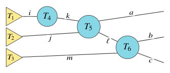
<figcaption class="paper-figure-caption"><b>Fig 1.</b> Fig. 1. A quantum circuit and its tensor-network representation.</figcaption>
</figure>
<figure class="paper-figure-card">
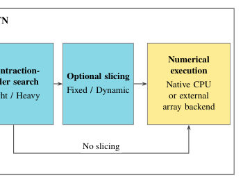
<figcaption class="paper-figure-caption"><b>Fig 2.</b> Fig. 3. The ArcTN workflow. Upstream software constructs the tensor network from a circuit and a simulation task. ArcTN searches for a contraction order, optionally slices the network, and executes the contraction on its native CPU executor or an external array backend.</figcaption>
</figure>
<figure class="paper-figure-card">
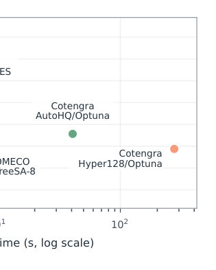
<figcaption class="paper-figure-caption"><b>Fig 3.</b> Fig. 4. Planning time (horizontal axis) and FLOPs (vertical axis) averaged over all 30 instances. Points in the bottom left indicate better performance.</figcaption>
</figure>
</div>

<p><strong>Summary.</strong> This paper introduces ArcTN, a novel framework for optimizing the contraction order of tensor networks used to simulate quantum circuits. It balances the trade-off between minimizing computational cost (FLOPs) and keeping the planning time low. The results show that ArcTN significantly outperforms existing methods, making large-scale quantum simulation more feasible.</p>
<p><strong>Why it may be interesting.</strong> This work provides a highly optimized numerical tool for simulating quantum circuits, which is crucial for researchers modeling complex quantum dynamics or testing quantum algorithms.</p>
<details>
<summary>Detailed structure</summary>
<p><strong>Main problem.</strong> The core challenge is efficiently planning the contraction order for tensor networks representing quantum circuits to minimize computational cost while managing planning time and intermediate tensor sizes.</p>
<p><strong>Main result.</strong> The proposed ArcTN framework, particularly its 'Heavy' preset, significantly reduces FLOPs and planning time compared to existing state-of-the-art methods on various quantum circuit benchmarks.</p>
<p><strong>Method.</strong> ArcTN is a contraction-order optimization framework that uses randomized-greedy construction, subtree reconfiguration, and parallel tempering, incorporating Fixed and Dynamic slicing to manage memory constraints.</p>
<p><strong>Model / system.</strong> The system models quantum circuits simulated via tensor networks (TNs). The process involves finding an optimal sequence of binary contractions to compute quantities like state vectors or expectation values.</p>
<p><strong>Key observables.</strong> FLOPs (computational cost), Planning Time, Maximum Intermediate Tensor Size, and the resulting Contraction Order.</p>
<p><strong>Important parameters / regimes.</strong> The optimization is governed by balancing computational cost, planning overhead, and tensor size limits ($M_{limit}$).</p>
<p><strong>Assumptions / limitations.</strong> The cost model $F(P)$ counts operand labels before elimination, and the total process memory must account for input, live, and output storage.</p>
<p><strong>Figures summary.</strong> Figures illustrate the quantum circuit to tensor-network mapping and the overall ArcTN workflow, showing the planning and execution stages.</p>
<p><strong>Paper structure.</strong> The paper introduces the problem of efficient TN contraction planning, details the ArcTN framework with Light/Heavy presets and slicing techniques, and validates its performance against multiple established benchmarks (QC32, MQT Bench).</p>
</details>
<details>
<summary>Abstract</summary>
<p>Tensor-network simulation of quantum circuits depends on contraction orders with low computational cost and small intermediate tensors, found without excessive planning time. We present ArcTN, a contraction-order optimization framework with two search presets. Light keeps planning overhead low, and Heavy spends more effort on refinement. Both combine randomized-greedy construction, subtree reconfiguration, and parallel tempering with stage-specific stopping rules. ArcTN also provides Fixed and Dynamic slicing to meet tensor-size limits and executes the returned orders. On the 30 QC32 quantum-circuit networks completed by all eight compared configurations, Light reduces FLOPs by 61.32% and plans 1.62$\times$ faster than Cotengra Auto/CMA-ES, and Heavy reduces FLOPs by 43.83% and plans 7.21$\times$ faster than Cotengra AutoHQ/Optuna. Heavy also needs 11.85% fewer FLOPs than OMECO TreeSA-8 and plans 1.33$\times$ faster. Dynamic slicing meets the size limits in all 90 runs on 18 scalar-output networks and reduces total sliced FLOPs by 31.99% relative to Fixed slicing, at the cost of longer planning. With a common NumPy executor, Heavy has the lowest combined planning and execution time among five configurations on the runs that all of them completed. On 672 networks built from 320 MQT Bench circuits, Heavy obtains the lowest geometric-mean FLOPs on the 142 large networks while planning 3.1$\times$ and 31$\times$ faster than Cotengra AutoHQ and Hyper128.</p>
</details>
<p><sub><a href="#top">↑ back to top</a></sub></p>

<p><a id="paper-2610.30403"></a></p>
<h3 id="nonlinear-canonical-transformations-for-studying-spin-12-hamiltonians"><a href="http://arxiv.org/abs/2610.30403v1">Nonlinear Canonical Transformations for Studying Spin-1/2 Hamiltonians</a></h3>
<p><strong>Authors:</strong> Swarnamoy Ghosh, Thomas M. Henderson, Gustavo E. Scuseria<br>
<strong>Type:</strong> theory · <strong>Category:</strong> strongly correlated electrons · <strong>PDF:</strong> <a href="https://arxiv.org/pdf/2610.30403v1">https://arxiv.org/pdf/2610.30403v1</a><br>
<strong>Analysis basis:</strong> full PDF text, analyzed in chunks
<strong>Topic relevance:</strong> <code>analog quantum simulation</code> <strong>3/5</strong> · <code>Keldysh / 2PI / non-Gaussian methods</code> <strong>1/5</strong></p>
<div class="figure-strip-hint">↔ Scroll figures horizontally</div>
<div class="paper-figures-scroll">
<figure class="paper-figure-card">
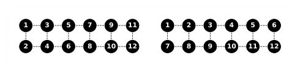
<figcaption class="paper-figure-caption"><b>Fig 1.</b> FIG. 1: Labeling schemes for 2D lattices. Two labeling schemes for the same finite 2 × n lattice, Left: the 2 × n labeling for n = 6. Right: the n × 2 labeling for n = 6.</figcaption>
</figure>
<figure class="paper-figure-card">
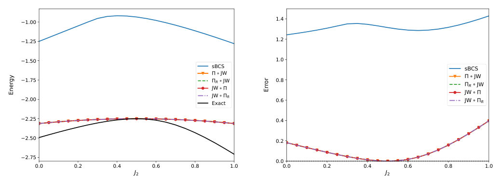
<figcaption class="paper-figure-caption"><b>Fig 2.</b> FIG. 2: Total energies and energy errors for the six-site J1–J2 Hamiltonian with open boundary conditions. Left panel: total energies. Right panel: energy errors relative to the exact result.</figcaption>
</figure>
<figure class="paper-figure-card">
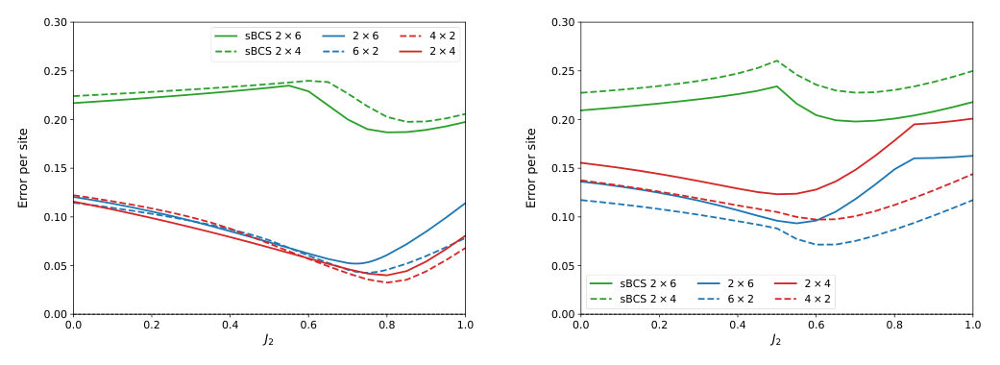
<figcaption class="paper-figure-caption"><b>Fig 3.</b> FIG. 3: Energy errors per site for the n × 2 and 2 × n SFS-transformed J1–J2 Hamiltonian relative to exact diagonalization. All SFS curves shown correspond to the Π ◦JW transformation; the other SFS variants yield identical sBCS energies for this isotropic Hamiltonian. Left panel: open boundary conditions. Right panel: periodic boundary conditions.</figcaption>
</figure>
<figure class="paper-figure-card">
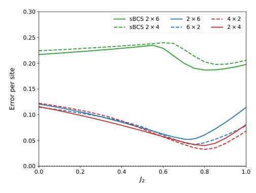
<figcaption class="paper-figure-caption"><b>Fig 4.</b> Figure 2 shows the total energies and energy errors for the 6-site SFS-transformed J1 −J2 Hamiltonian with open boundary conditions (OBC). We can immediately see that all the SFS-transformed sBCS energies are iden- tical. That it makes no difference whether we use Π or ΠR follows from the global su(2) symmetry; since the interaction is isotropic, a global rotation of the spin co- ordinate axes leaves the Hamiltonian unchanged. That Π ◦JW and JW ◦Π are identical is less obvious, but in some sense these transformations are duals of one another and we have observed previously that in spin to fermion mappings, they provide identical results for isotropic spin Hamiltonians34.</figcaption>
</figure>
<figure class="paper-figure-card">
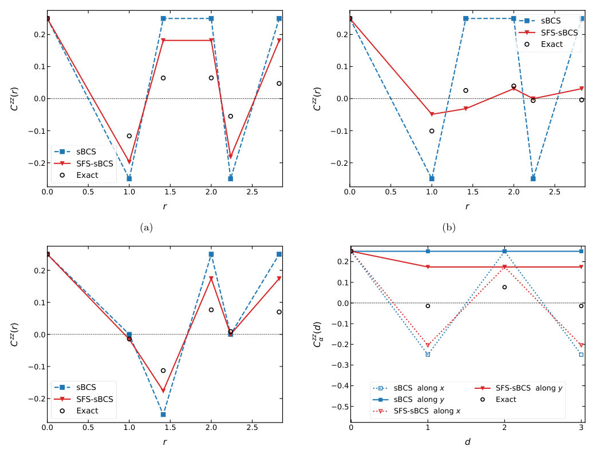
<figcaption class="paper-figure-caption"><b>Fig 5.</b> FIG. 4: Spin–spin correlation functions for the 4 × 4 square-lattice J1–J2 model with periodic boundary conditions. Panels (a)–(c) show the radial correlations at J2 = 0.2, 0.5, and 0.8, respectively. Panel (d) shows the direction-resolved correlations in the stripe regime at J2 = 0.8. SFS mean field corresponds to Π ◦JW transformation.</figcaption>
</figure>
</div>

<p><strong>Summary.</strong> This paper introduces a nonlinear canonical transformation (SFS) to simplify the study of strongly correlated spin Hamiltonians. By mapping the spin problem into an equivalent fermionic representation, the authors show that mean-field approximations yield substantially improved accuracy for models like the XXZ chain. This suggests that such exact transformations can serve as powerful preconditioners for advanced many-body calculations.</p>
<p><strong>Why it may be interesting.</strong> The development of systematic, exact transformations that precondition mean-field approximations is highly valuable for tackling strongly correlated models where standard mean-field approaches fail.</p>
<details>
<summary>Detailed structure</summary>
<p><strong>Main problem.</strong> Conventional coupled-cluster methods struggle with strongly correlated quantum systems, such as frustrated spin lattices, due to multireference character and symmetry breaking.</p>
<p><strong>Main result.</strong> A nonlinear spin-fermion-spin (SFS) transformation maps the Hamiltonian into a form where mean-field theory significantly reduces the energy error compared to standard methods, improving accuracy for models like XXZ.</p>
<p><strong>Method.</strong> The authors introduce the SFS transformation, which combines Jordan-Wigner and parity transformations to map spin operators to fermionic ones, allowing the Hamiltonian to be treated via mean-field theory.</p>
<p><strong>Model / system.</strong> The study focuses on spin-1/2 Hamiltonians, using the XXZ and J1-J2 models as benchmarks. The core technique involves transforming the spin representation into an equivalent fermionic representation.</p>
<p><strong>Key observables.</strong> Energy error reduction when comparing mean-field results between the transformed and untransformed representations.</p>
<p><strong>Important parameters / regimes.</strong> The dimensionality (1D vs 2D) and the specific spin model parameters (e.g., XXZ anisotropy).</p>
<p><strong>Assumptions / limitations.</strong> The mean-field ansatz is assumed to be a product state (sBCS), and the transformation is assumed to be exact, preserving the spectrum.</p>
<p><strong>Figures summary.</strong> The notes detail the algebraic structure of the transformations, showing how Pauli operators map to fermionic products, and analyze the computational scaling of the resulting mean-field evaluation.</p>
<p><strong>Paper structure.</strong> The paper first establishes the problem with correlated systems, then introduces the SFS transformation via JW and parity mappings, demonstrates its application to benchmark models (XXZ), and finally analyzes the computational scaling of the resulting mean-field theory.</p>
</details>
<details>
<summary>Abstract</summary>
<p>Strongly correlated quantum systems, including frustrated spin lattices, remain challenging for conventional coupled-cluster methods because their ground states often exhibit strong multireference character and symmetry breaking. Although multireference and symmetry-projected coupled-cluster theories are promising, they are not yet black-box methods and require system-specific development. The XXZ and $J_1$-$J_2$ spin models provide demanding benchmarks. Spin-BCS-based coupled-cluster methods may require high excitation ranks to recover the exact ground-state physics in strongly correlated regimes. We introduce a nonlinear spin-fermion-spin (SFS) transformation designed to map a strongly correlated spin Hamiltonian into a new spin Hamiltonian whose ground state is more accurately described at the mean-field level. For a representative SFS transformation, we identify a compact Clifford circuit that maps transformed product states to circuit-dressed, generally entangled states in the original representation. The transformed Hamiltonian can then be treated using broken-symmetry mean-field theory and post-mean-field methods. Benchmarks for the XXZ and $J_1$-$J_2$ Hamiltonians show that spin mean-field theory in the transformed representation reduces the energy error relative to conventional spin-BCS mean field. The spin-BCS-based coupled-cluster calculations for the one-dimensional XXZ model provide substantially improved accuracy relative to the corresponding untransformed methods. In 2D, the accuracy of the transformed mean-field solutions depends on the site ordering and boundary conditions, as nonlocal strings can appear. These results show that exact transformations of operator representations can serve as many-body preconditioners for mean-field and low-rank coupled-cluster approximations to strongly correlated spin systems.</p>
</details>
<p><sub><a href="#top">↑ back to top</a></sub></p>

<p><a id="paper-2610.30473"></a></p>
<h3 id="photon-localization-local-measurements-localized-states-and-causality"><a href="http://arxiv.org/abs/2610.30473v1">Photon localization: Local measurements, localized states, and causality</a></h3>
<p><strong>Authors:</strong> Jan Gulla, Johannes Skaar<br>
<strong>Type:</strong> theory · <strong>Category:</strong> other · <strong>PDF:</strong> <a href="https://arxiv.org/pdf/2610.30473v1">https://arxiv.org/pdf/2610.30473v1</a><br>
<strong>Analysis basis:</strong> full PDF text, analyzed in chunks
<strong>Topic relevance:</strong> <code>quantum measurements</code> <strong>3/5</strong> · <code>Keldysh / 2PI / non-Gaussian methods</code> <strong>1/5</strong></p>
<div class="figure-strip-hint">↔ Scroll figures horizontally</div>
<div class="paper-figures-scroll">
<figure class="paper-figure-card">
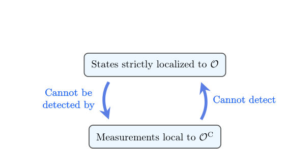
<figcaption class="paper-figure-caption"><b>Fig 1.</b> Figure 1 Potentially circular definition of strictly localized states and local measurements.</figcaption>
</figure>
<figure class="paper-figure-card">
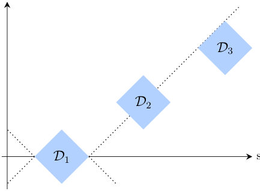
<figcaption class="paper-figure-caption"><b>Fig 2.</b> Figure 3 A Sorkin-type scenario with three local measurements in extended regions D1, D2, and D3. The regions D1 and D3 are spacelike separated, whereas D2 partially overlaps with the lightcones of both D1 and D3.</figcaption>
</figure>
<figure class="paper-figure-card">
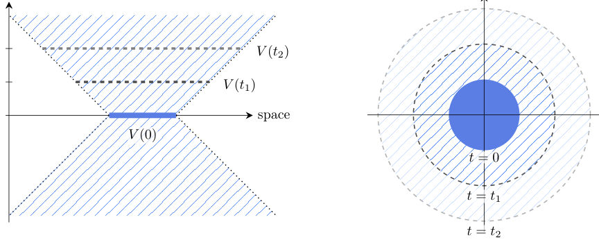
<figcaption class="paper-figure-caption"><b>Fig 3.</b> Figure 6 Visualization of the localization region (155). At any time t, the set O determines the current spatial localization region V (t). In this case, O is the lightcone of V (0). (a) Spacetime diagram of O. (b) 2D illustration of the spatial localization region V (t) for some different times t.</figcaption>
</figure>
<figure class="paper-figure-card">
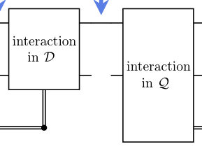
<figcaption class="paper-figure-caption"><b>Fig 4.</b> Figure 7 A quantum circuit model of a physical process with a source W located in some spacetime region D that produces a state |ψ⟩of the field ϕ(x), followed by a measurement of ϕ(x) in some region Q.</figcaption>
</figure>
<figure class="paper-figure-card">
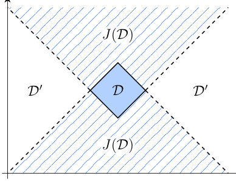
<figcaption class="paper-figure-caption"><b>Fig 5.</b> Figure 8 Let D for simplicity be a bounded spacetime diamond. Denote its lightcone by J(D). The complement of the lightcone J(D)C is equal to the spacelike region D′ of D.</figcaption>
</figure>
</div>

<p><strong>Summary.</strong> This paper reviews the rigorous definition of particle localization for photons within Quantum Field Theory, arguing that localization must be understood through the lens of local measurements and relativistic causality. It demonstrates that while single photons cannot be strictly localized, the formalism provides tools to understand how localized information can propagate, critically analyzing the limitations of common approximations used in quantum optics.</p>
<p><strong>Why it may be interesting.</strong> This work is highly relevant to quantum optics and open quantum systems because it tackles the foundational limitations of describing single particles (photons) in a relativistic quantum setting, which dictates how quantum information can be reliably transmitted and measured.</p>
<details>
<summary>Detailed structure</summary>
<p><strong>Main problem.</strong> The paper addresses the fundamental theoretical challenge of defining and understanding what it means for a relativistic particle, specifically a photon, to be localized within the framework of Quantum Field Theory (QFT). It ties this definition directly to the constraints imposed by relativistic causality and measurable local outcomes.</p>
<p><strong>Main result.</strong> Strictly localized single-photon states are argued to be impossible in QFT due to constraints like the Reeh-Schlieder theorem, although coherent states can exhibit effective time localization. The paper establishes that localized information propagation must be carefully defined through local measurements.</p>
<p><strong>Method.</strong> The analysis involves reviewing formalisms using local operator algebras, comparing expectation values of local observables (like $\langle:E^2(t): 
angle$) for different quantum states (single-photon vs. coherent), and contrasting exact QFT treatments with common approximations like the narrow-bandwidth limit.</p>
<p><strong>Model / system.</strong> The primary system is the electromagnetic field (photons) in Minkowski spacetime, analyzed using frequency-mode annihilation and creation operators. The theoretical framework is Quantum Field Theory, with specific focus on the mathematical structure of local observables.</p>
<p><strong>Key observables.</strong> Expectation value of the normal-ordered electric field squared ($\langle:E^2(t): 
angle$), and the existence/behavior of strictly localized states.</p>
<p><strong>Important parameters / regimes.</strong> Relativistic causality, the bandwidth of the light pulse (narrow vs. broadband), and the structure of the local operator algebra.</p>
<p><strong>Assumptions / limitations.</strong> The analysis critiques the standard quantum optics assumption of using the narrow-bandwidth approximation, arguing that the full, broadband spectrum must be retained to satisfy causality constraints.</p>
<p><strong>Paper structure.</strong> The review is structured to first establish the problem (localization vs. causality), review the necessary theoretical background (local observables, Reeh-Schlieder theorem), develop the formalism for local measurements, define strictly localized states, and finally apply these concepts to photonic examples.</p>
</details>
<details>
<summary>Abstract</summary>
<p>We review what it means for a relativistic particle to be localized and argue that the most useful approach is through local measurement. This perspective ties localization directly to relativistic causality and measurable outcomes in spacetime. Strict localization in quantum field theory is formalized by states that give the same expectation value as vacuum for all local observables outside some spacetime region. With this formalism, single photons cannot be strictly localized, but coherent states can. The structure and interpretation of local observables and local operator algebras are discussed in connection with the Reeh-Schlieder theorem. Since probabilities of local measurement outcomes cannot vanish in vacuum, particle detection events must be phrased carefully. Key characteristics of strictly localized states are surveyed alongside concrete strategies for constructing them. The relationship between localization, causality, and on-demand sources is analyzed, finding that strictly localized states can represent localized, propagating information in quantum field theory. Explicit examples of localized photonic states are presented with an emphasis on quantum optics, including states that approximate single photons and (entangled) Bell states.</p>
</details>
<p><sub><a href="#top">↑ back to top</a></sub></p>

<p><a id="paper-2610.30686"></a></p>
<h3 id="time-reversal-based-quantum-metrology-in-a-central-spin-architecture-from-satin-to-butterfly-echo"><a href="http://arxiv.org/abs/2610.30686v1">Time-reversal-based quantum metrology in a central-spin architecture: from SATIN to butterfly echo</a></h3>
<p><strong>Authors:</strong> Aditya Kumar, Sayan Choudhury<br>
<strong>Type:</strong> theory · <strong>Category:</strong> other · <strong>PDF:</strong> <a href="https://arxiv.org/pdf/2610.30686v1">https://arxiv.org/pdf/2610.30686v1</a><br>
<strong>Analysis basis:</strong> full PDF text, analyzed in chunks
<strong>Topic relevance:</strong> <code>analog quantum simulation</code> <strong>3/5</strong> · <code>quantum measurements</code> <strong>1/5</strong></p>
<div class="figure-strip-hint">↔ Scroll figures horizontally</div>
<div class="paper-figures-scroll">
<figure class="paper-figure-card">
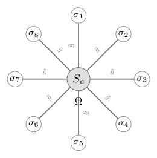
<figcaption class="paper-figure-caption"><b>Fig 1.</b> Figure 1: The star-graph topology of the central spin model: a single ancilla spin Sc with energy gap Ω couples uniformly to N bath spins σj via XX interactions with strength ˜g, requiring only N physical bonds with no direct bath-bath coupling.</figcaption>
</figure>
<figure class="paper-figure-card">
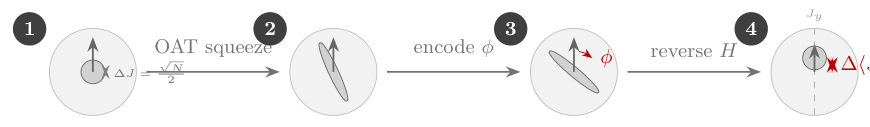
<figcaption class="paper-figure-caption"><b>Fig 2.</b> Figure 2: SATIN echo protocol implemented using the full central-spin Hamiltonian. (1) The bath is initialized in a coherent spin state (CSS), with the central spin in its lowest-energy state. (2) Forward evolution under the full Hamiltonian generates the entangled probe state; in the dispersive regime, this evolution is described approximately by the effective OAT Hamiltonian H(b) eff (Eq. (3)). (3) The unknown phase ϕ is encoded. (4) Time reversal under the full Hamiltonian returns the bath to its initial CSS at ϕ = 0, while a nonzero phase produces a displacement of ⟨Jy⟩proportional to ϕ. The effective-OAT prediction for the signal is given by Eq. (5).</figcaption>
</figure>
<figure class="paper-figure-card">
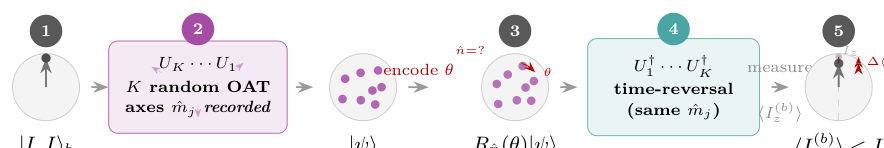
<figcaption class="paper-figure-caption"><b>Fig 3.</b> Figure 3: Butterfly echo protocol implemented using the central-spin model. (1) The central spin is initialized in its lowest-energy state and the bath in the fully polarized Dicke state |I, I⟩b. (2) K = 8 random bath rotations are used to conjugate successive evolutions under the full central-spin Hamiltonian. In the dispersive regime, these steps approximate the random-axis OAT circuit and scramble the probe into an approximately Haar-random state. (3) An unknown rotation Rˆn(θ) about an arbitrary axis ˆn encodes the signal. (4) The inverse sequence of full CSM unitaries is applied using the same recorded random axes. (5) The bath returns to full polarization at zero encoded phase, while...</figcaption>
</figure>
<figure class="paper-figure-card">
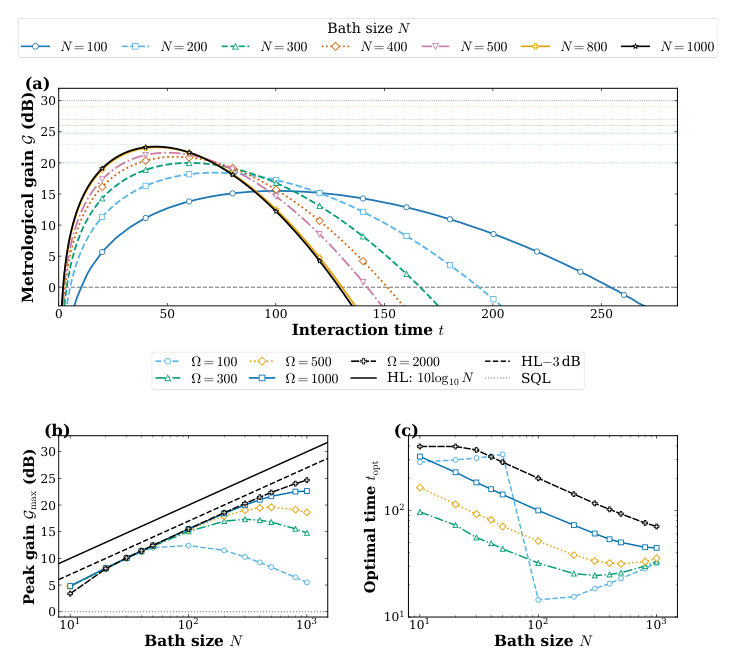
<figcaption class="paper-figure-caption"><b>Fig 4.</b> Figure 4: Standard echo (SATIN) protocol via the central spin model, Scen = 0.5, ˜g = 2. (a) Metrological gain G vs time t for Ω= 1000 and N ∈{100, 200, 300, 400, 500, 800, 1000}. Bell-shaped curves show the characteristic SATIN gain profile; the dashed lines indicate the squeezed-state parity-readout benchmark HL −3 dB, while the ideal SATIN collective-readout ceiling is HL −4.34 dB; the residual deficit relative to the ideal SATIN ceiling and its growth at large N are discussed in Sec. III A. Coloured dotted lines: individual Heisenberg limits 10 log10 N. Grey dashed: SQL (0 dB). (b) Peak gain vs N for Ω∈{100, 300, 500, 1000, 2000}. The fitted slopes range from 7.2 dB/decade at Ω= 300 to...</figcaption>
</figure>
<figure class="paper-figure-card">
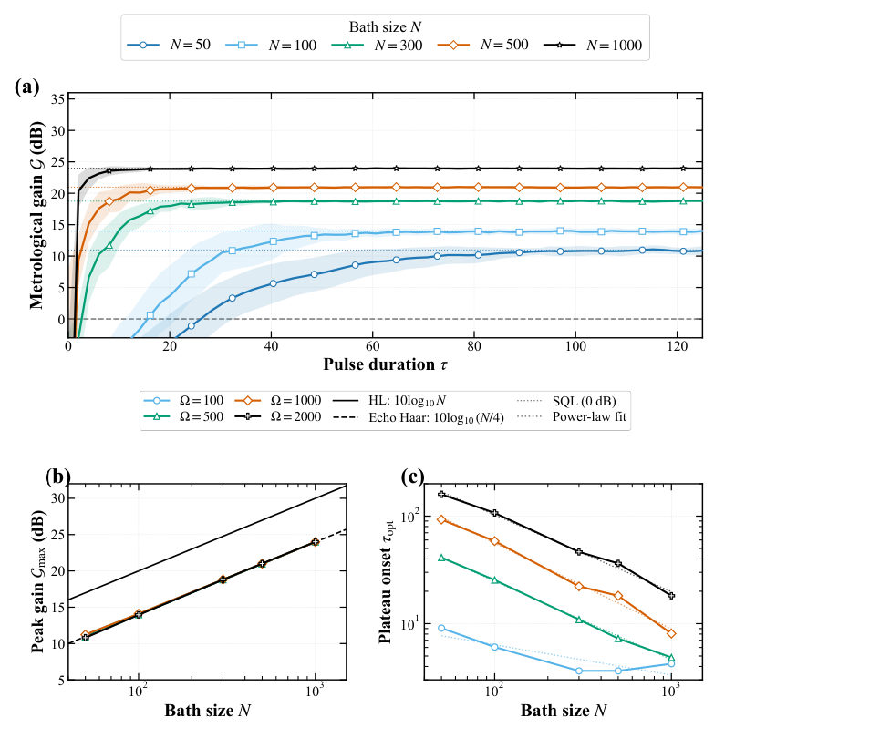
<figcaption class="paper-figure-caption"><b>Fig 5.</b> Figure 5: Butterfly echo protocol via the central spin model, Scen = 0.5, ˜g = 2, K = 8. Shaded bands: ±1σ over 50 random circuit realisations. (a) Gain G vs pulse duration τ for Ω= 1000 and N ∈{50, 100, 300, 500, 1000}. Each curve rises to a stable plateau at the echo Haar limit 10 log10(N/4) (Eq. (11), coloured dotted lines), in contrast to the bell-shaped profile of Fig. 4(a). Grey dashed: SQL. (b) Peak plateau gain vs N for Ω∈{100, 500, 1000, 2000}. All four Ωvalues collapse onto the Haar limit (dashed), with fitted slopes 9.8-10.1 dB/decade; the small residual gap from the Haar limit for Ω= 100 at large N reflects the dispersive approximation error (Table II). (c) Plateau onset τopt vs...</figcaption>
</figure>
</div>

<p><strong>Summary.</strong> This paper analyzes quantum-enhanced sensing using the Central Spin Model, implementing time-reversal-based echo protocols like SATIN and the butterfly echo. It demonstrates that this architecture achieves Heisenberg-limited scaling for sensing, with the butterfly echo offering superior robustness by being axis-agnostic. The central spin size acts as a control knob to optimize the measurement timescale without sacrificing the ultimate metrological ceiling.</p>
<p><strong>Why it may be interesting.</strong> This work directly addresses quantum sensing using controllable spin architectures (CSM), which is highly relevant to experimental platforms like cavity QED and NMR quantum processors, providing concrete scaling laws for achieving Heisenberg scaling.</p>
<details>
<summary>Detailed structure</summary>
<p><strong>Main problem.</strong> The paper investigates achieving quantum-enhanced metrology beyond the Standard Quantum Limit using time-reversal-based echo protocols.</p>
<p><strong>Main result.</strong> The central-spin architecture allows for both SATIN and butterfly echo protocols to achieve Heisenberg-scaled sensing, with the butterfly echo providing robust, axis-agnostic sensing.</p>
<p><strong>Method.</strong> The authors analyze the dynamics using time-reversal symmetry to implement echo protocols, comparing the performance of the SATIN and butterfly echo schemes.</p>
<p><strong>Model / system.</strong> The system is the Central Spin Model (CSM), featuring a single ancilla spin mediating interactions between $N$ bath spins via a star-graph topology. The Hamiltonian is analyzed in the dispersive regime, leading to an effective Hamiltonian resembling the One-Axis Twisting (OAT) model.</p>
<p><strong>Key observables.</strong> Fisher Information ($F_Q$), phase variance ($\Delta\phi$), and the achievable metrological gain relative to the Heisenberg Limit (HL).</p>
<p><strong>Important parameters / regimes.</strong> Central spin magnitude ($S_{
m cen}$), number of bath spins ($N$), and the detuning parameter ($\Omega$).</p>
<p><strong>Assumptions / limitations.</strong> The analysis relies on the time-reversal echo closure holding exactly, and approximations are made in the dispersive regime, though the core echo mechanism is shown to be exact.</p>
<p><strong>Figures summary.</strong> Figures illustrate the gain dynamics of the echo protocols versus the number of random scrambling pulses ($K$) and the dependence of the optimal time on system parameters, confirming convergence to the Haar limit.</p>
<p><strong>Paper structure.</strong> The paper first introduces the CSM and the goal of quantum metrology. It then details the SATIN protocol, followed by the more robust butterfly echo protocol. The analysis concludes by discussing the role of the central spin magnitude as a speed knob and the scaling limits.</p>
</details>
<details>
<summary>Abstract</summary>
<p>We investigate quantum-enhanced time-reversal-based metrology using the central spin model, in which a single ancilla spin of magnitude $S_{\rm cen}$ mediates interactions between $N$ bath spins through a star-graph topology. We demonstrate that the SATIN (Signal Amplification Through Time-reversal Interaction) echo protocol can be implemented in this setup to achieve a Fisher information of $N^2/e$ with the collective $\langle J_y\rangle$ readout, corresponding to a $4.34\,\mathrm{dB}$ offset from the Heisenberg limit. Furthermore, we establish that this platform provides a pathway to perform the butterfly echo protocol by conjugating each evolution step with a random collective bath rotation, thereby achieving axis-agnostic Heisenberg-scaled sensing. Crucially, with a small $N-$independent number of random steps, the butterfly echo reaches a Fisher information of $N^2/4$ ($6\,\mathrm{dB}$ below the Heisenberg limit) for any unknown encoding axis, with the plateau gain tracking the Haar limit. Finally, we demonstrate that the central-spin magnitude $S_{\rm cen}$ provides a powerful knob to reduce the optimal protocol timescale without altering the metrological ceiling or the circuit depth required to reach isotropy. The proposed scheme is relevant to cavity QED and NMR quantum processors, where the central spin architecture arises naturally.</p>
</details>
<p><sub><a href="#top">↑ back to top</a></sub></p>

<p><a id="paper-2610.30290"></a></p>
<h3 id="math306math-flux-tuning-of-quantum-paramagnetism-in-the-triangular-lattice-hubbard-model"><a href="http://arxiv.org/abs/2610.30290v1">$π$-Flux Tuning of Quantum Paramagnetism in the Triangular-Lattice Hubbard Model</a></h3>
<p><strong>Authors:</strong> Zhaochen Liu, Andreas Feuerpfeil, Ronny Thomale<br>
<strong>Type:</strong> theory · <strong>Category:</strong> strongly correlated electrons · <strong>PDF:</strong> <a href="https://arxiv.org/pdf/2610.30290v1">https://arxiv.org/pdf/2610.30290v1</a><br>
<strong>Analysis basis:</strong> full PDF text, analyzed in chunks
<strong>Topic relevance:</strong> <code>analog quantum simulation</code> <strong>3/5</strong></p>
<div class="figure-strip-hint">↔ Scroll figures horizontally</div>
<div class="paper-figures-scroll">
<figure class="paper-figure-card">
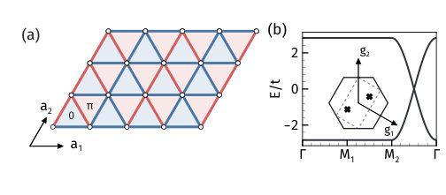
<figcaption class="paper-figure-caption"><b>Fig 1.</b> FIG. 1. Geometry and band structure of the π-tHM. (a) Red and blue bonds denote si,j = −1 and si,j = 1 in Eq. 1, respectively. We define a cylindrical geometry by wrapping along the primitive vector a2. (b) The two bands touch at a pair of Dirac points, marked by crosses. The solid (dashed) outlines denote the original (reduced) Brillouin zone.</figcaption>
</figure>
<figure class="paper-figure-card">
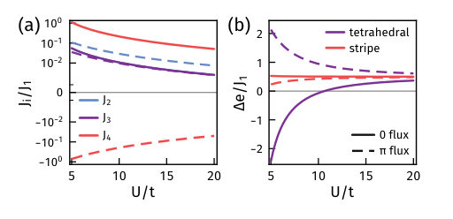
<figcaption class="paper-figure-caption"><b>Fig 2.</b> FIG. 2. (a) Signed exchange ratios Ji/J1 from the fourth- order strong-coupling expansion on a symmetric logarithmic scale. Solid (dashed) curves denote the zero-(π)-flux model. (b) Classical energies of candidate orders relative to the 120◦</figcaption>
</figure>
<figure class="paper-figure-card">
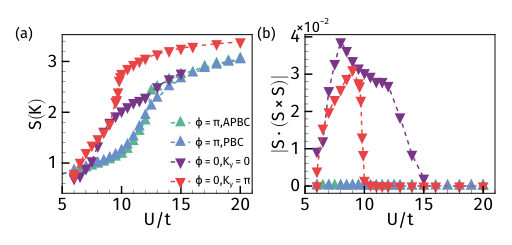
<figcaption class="paper-figure-caption"><b>Fig 3.</b> FIG. 3. iDMRG comparison of magnetic and chiral order in the zero- and π-flux models at bond dimension D = 8800. (a) The spin structure factor S(K) develops rapidly near U/t ≃10 in 0-tHM and near U/t ≃12 in the π-tHM, marking the onset of 120◦N´eel correlations. (b) 0-tHM displays finite scalar chirality successively dropping to zero towards the 120◦N´eel in the Ky = 0, π channels, whereas throughout no resolvable chirality appears in π-tHM.</figcaption>
</figure>
<figure class="paper-figure-card">
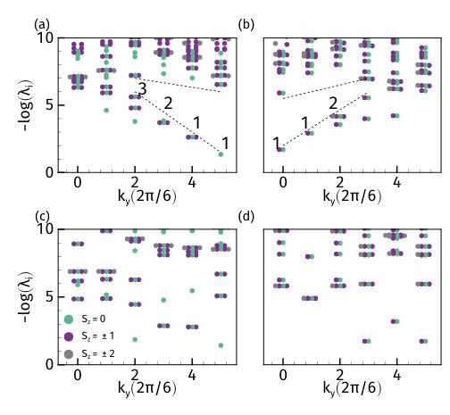
<figcaption class="paper-figure-caption"><b>Fig 4.</b> FIG. 4. Momentum-resolved entanglement spectra in the charge-neutral sectors of the 0-tHM at bond dimension D = 8800. The top row displays U/t = 8 in the (a) Ky = 0 and (b) Ky = π sectors. The dashed guides and integers mark the low-lying 1, 1, 2, 3 counting consistent with a CSL. The bottom row displays the N´eel regime at U/t = 14 in the (c) Ky = 0 and (d) Ky = π sectors. The chiral branch is absent, and panel (d) exhibits a fourfold-degenerate lowest entanglement level. Green, purple, and gray points denote Sz = 0, Sz = ±1, and |Sz| &gt; 1, respectively. Additional spectra are presented in the SM [57].</figcaption>
</figure>
<figure class="paper-figure-card">
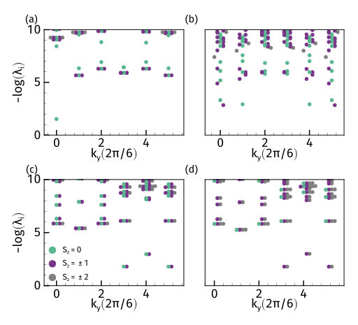
<figcaption class="paper-figure-caption"><b>Fig 5.</b> FIG. 5. Momentum-resolved entanglement spectra in the charge-neutral sectors of the π-tHM at bond dimension D = 8800. The top row displays U/t = 8 for (a) PBC and (b) APBC. PBC discretizations misses the Dirac points and yields a nondegenerate lowest level, while APBC crosses the Dirac points and produces an irregular finite-bond-dimension spec- trum hinting at artificial stripe magnetization [57]. The bot- tom row displays the N´eel regime at U/t = 14 under (c) PBC and (d) APBC. Both boundary conditions exhibit a fourfold- degenerate lowest entanglement level, as in 0-tHM. Green, purple, and gray points denote Sz = 0, Sz = ±1, and |Sz| &gt; 1, respectively. Additional spectra are presented in...</figcaption>
</figure>
</div>

<p><strong>Summary.</strong> This work investigates how threading a staggered $\pi$-flux through a triangular-lattice Hubbard model fundamentally alters its quantum magnetic ground state compared to the zero-flux case. By analyzing the sign of the ring-exchange coupling and using advanced numerical methods like iDMRG, the authors demonstrate that flux tuning provides a clear mechanism to suppress chiral spin liquid behavior in favor of different magnetic orders.</p>
<p><strong>Why it may be interesting.</strong> The explicit comparison of how geometric frustration (via flux) tunes the nature of quantum correlations (chiral vs. non-chiral) is highly relevant for understanding exotic magnetic phases in strongly correlated materials.</p>
<details>
<summary>Detailed structure</summary>
<p><strong>Main problem.</strong> The study compares the quantum paramagnetic regimes of two time-reversal-symmetric triangular-lattice Hubbard models (zero-flux vs. staggered $\pi$-flux) to understand how flux tuning affects the stabilization of chiral versus non-chiral quantum states.</p>
<p><strong>Main result.</strong> The sign of the ring-exchange coupling ($J_4$) acts as an efficient discriminator: positive $J_4$ promotes chiral spin liquid behavior in the zero-flux model, while negative $J_4$ disfavors chirality in the $\pi$-flux model.</p>
<p><strong>Method.</strong> The research combines strong-coupling expansions with advanced numerical techniques, including infinite Density Matrix Renormalization Group (iDMRG) calculations and classical energy minimization for various ordered states.</p>
<p><strong>Model / system.</strong> The system is the Hubbard model on a triangular lattice, analyzed at half filling. The model is compared in its zero-flux and staggered $\pi$-flux configurations, which are treated via effective spin Hamiltonians.</p>
<p><strong>Key observables.</strong> Scalar chirality, spin structure factor $S(\mathbf{K})$, entanglement spectrum, and classical energies of candidate magnetic orders (Néel, tetrahedral).</p>
<p><strong>Important parameters / regimes.</strong> The coupling ratio $U/t$, and the flux parameter ($\Phi=0$ vs. $\Phi=\pi$).</p>
<p><strong>Assumptions / limitations.</strong> The analysis relies on projecting out charge degrees of freedom to obtain an effective spin model, and comparisons are made between different boundary conditions (PBC vs. APBC) in DMRG calculations.</p>
<p><strong>Figures summary.</strong> Figures illustrate the band structure of the $\pi$-flux model, the evolution of exchange couplings and classical ordered state energies vs. $U/t$, and momentum-resolved entanglement spectra showing transitions between chiral and magnetic regimes.</p>
<p><strong>Paper structure.</strong> The paper systematically compares the two flux models by analyzing their effective spin interactions, calculating the stability of various ordered states using mean-field theory, and finally probing the quantum ground state using iDMRG and entanglement spectrum analysis.</p>
</details>
<details>
<summary>Abstract</summary>
<p>We compare two time-reversal-symmetric triangular-lattice Hubbard models at half filling: the zero-flux model and a staggered $π$-flux model with zero and $π$ flux through oppositely oriented triangles. Although both reduce to the same Heisenberg model at leading order in the strong-coupling limit, their distinct charge fluctuation profiles yield different quantum paramagnetic regimes. Combining a strong-coupling expansion with infinite density matrix renormalization group (iDMRG) calculations, we find that the positive ring-exchange of the zero-flux model promotes spontaneous chirality, consistent with its notion of a chiral spin liquid at intermediate coupling. In the staggered-$π$-flux model, whose noninteracting limit is a Dirac semimetal, the ring exchange changes sign and disfavors chiral order and we find no resolvable scalar chirality. This renders flux-tuned ring-exchange an efficient discriminator between chiral and non-chiral quantum paramagnets at finite coupling.</p>
</details>
<p><sub><a href="#top">↑ back to top</a></sub></p>

<p><a id="paper-2610.30295"></a></p>
<h3 id="pure-states-are-optimal-for-total-energy-constrained-quantum-channel-discrimination"><a href="http://arxiv.org/abs/2610.30295v1">Pure states are optimal for total energy-constrained quantum channel discrimination</a></h3>
<p><strong>Authors:</strong> Christos N. Gagatsos<br>
<strong>Type:</strong> theory · <strong>Category:</strong> quantum information and computing · <strong>PDF:</strong> <a href="https://arxiv.org/pdf/2610.30295v1">https://arxiv.org/pdf/2610.30295v1</a><br>
<strong>Analysis basis:</strong> full PDF text, analyzed in chunks
<strong>Topic relevance:</strong> <code>quantum measurements</code> <strong>3/5</strong></p>
<div class="figure-strip-hint">↔ Scroll figures horizontally</div>
<div class="paper-figures-scroll">
<figure class="paper-figure-card">
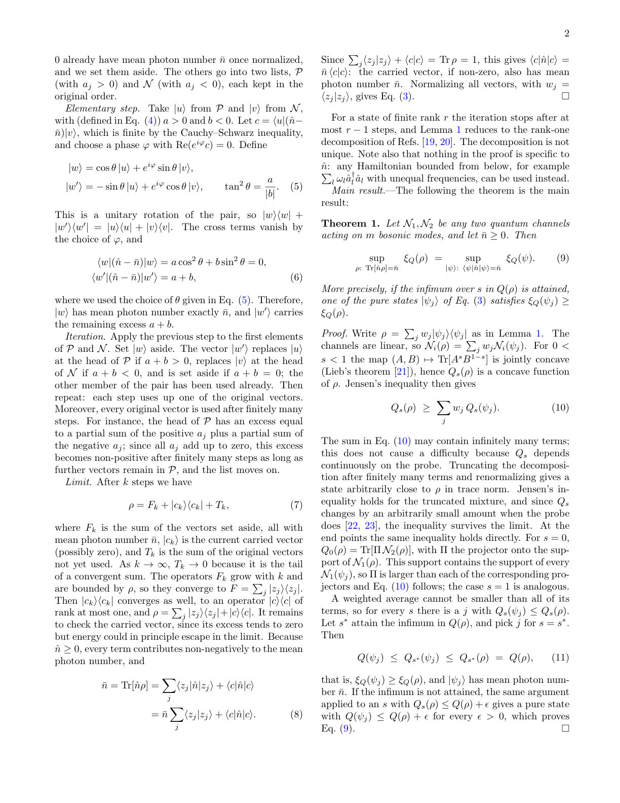
<figcaption class="paper-figure-caption"><b>Fig 1.</b> Low-resolution page preview, page 2</figcaption>
</figure>
<figure class="paper-figure-card">
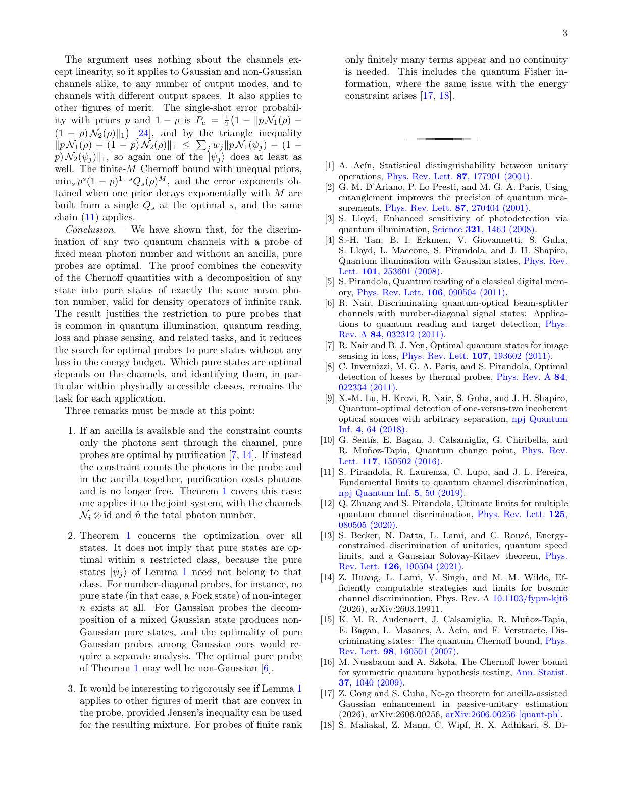
<figcaption class="paper-figure-caption"><b>Fig 2.</b> Low-resolution page preview, page 3</figcaption>
</figure>
<figure class="paper-figure-card">

<figcaption class="paper-figure-caption"><b>Fig 3.</b> Low-resolution page preview, page 4</figcaption>
</figure>
</div>

<p><strong>Summary.</strong> This paper proves that when discriminating between two quantum channels acting on bosonic modes under a fixed mean photon number constraint, the optimal probe state must be pure. The proof utilizes a novel decomposition of mixed states into pure components, extending prior mathematical results to infinite-dimensional systems. This establishes a powerful theoretical limit on measurement performance in quantum communication.</p>
<p><strong>Why it may be interesting.</strong> This work provides a fundamental theoretical result about optimal measurement strategies in quantum optics and quantum information, showing that purity is sufficient for optimal discrimination under energy constraints.</p>
<details>
<summary>Detailed structure</summary>
<p><strong>Main problem.</strong> The paper addresses determining the optimal probe state for discriminating between two quantum channels acting on bosonic modes, subject to a fixed mean photon number constraint.</p>
<p><strong>Main result.</strong> It is proven that pure probe states are optimal for this discrimination task, meaning any mixed probe can be matched in performance by a pure probe with the same mean photon number.</p>
<p><strong>Method.</strong> The proof relies on decomposing any state with a fixed mean photon number into a mixture of pure states, extending a known rank-one decomposition to infinite-rank density operators.</p>
<p><strong>Model / system.</strong> The system involves bosonic modes subjected to two quantum channels ($\mathcal{N}_1$ and $\mathcal{N}_2$). The probe state $
ho$ is constrained by its total mean photon number $    ext{Tr}[\hat{n}
ho] = ar{n}$.</p>
<p><strong>Key observables.</strong> Quantum Chernoff exponent ($\xi_Q$), single-shot error probability ($P_e$), and the mean photon number ($ar{n}$).</p>
<p><strong>Important parameters / regimes.</strong> The fixed mean photon number $ar{n}$ acts as the primary constraint parameter.</p>
<p><strong>Assumptions / limitations.</strong> The result holds for arbitrary quantum channels and any figure of merit derived from the Chernoff quantities. A key assumption is the validity of the state decomposition lemma.</p>
<p><strong>Paper structure.</strong> The paper establishes the problem setup, proves a crucial decomposition lemma for states with fixed mean photon number, and then uses this lemma along with properties of the Chernoff quantities to prove the optimality of pure states.</p>
</details>
<details>
<summary>Abstract</summary>
<p>We consider the discrimination of two quantum channels acting on bosonic modes, with a probe state of fixed mean photon number and no ancilla. We prove that pure probes are optimal: for every mixed probe there is a pure probe with exactly the same mean photon number that performs at least as well. The result holds for arbitrary channels and for every figure of merit built from the Chernoff quantities $\Tr[ρ_1^sρ_2^{1-s}]$, including the quantum Chernoff exponent, as well as for the single-shot error probability. The proof relies on a decomposition of any state of mean photon number $\nb$ into pure states of mean photon number exactly $\nb$, which extends a matrix rank-one decomposition of Huang and Zhang to density operators of infinite rank.</p>
</details>
<p><sub><a href="#top">↑ back to top</a></sub></p>

<p><a id="paper-2610.31541"></a></p>
<h3 id="sign-problem-free-bosonic-auxiliary-field-quantum-monte-carlo"><a href="http://arxiv.org/abs/2610.31541v1">Sign-problem-free Bosonic Auxiliary Field Quantum Monte Carlo</a></h3>
<p><strong>Authors:</strong> Yin-Kai Yu, Zhong-Chao Wei, Zi-Xiang Li<br>
<strong>Type:</strong> theory · <strong>Category:</strong> numerical methods · <strong>PDF:</strong> <a href="https://arxiv.org/pdf/2610.31541v1">https://arxiv.org/pdf/2610.31541v1</a><br>
<strong>Analysis basis:</strong> full PDF text, analyzed in chunks
<strong>Topic relevance:</strong> <code>analog quantum simulation</code> <strong>3/5</strong></p>
<div class="figure-strip-hint">↔ Scroll figures horizontally</div>
<div class="paper-figures-scroll">
<figure class="paper-figure-card">
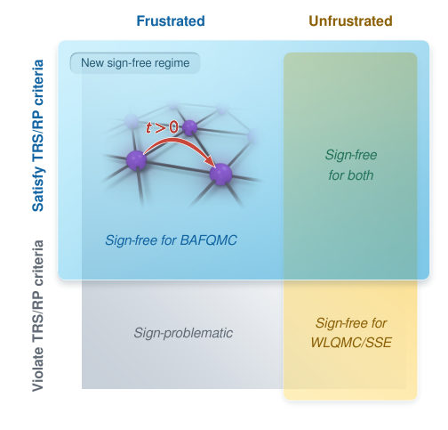
<figcaption class="paper-figure-caption"><b>Fig 1.</b> FIG. 1. Schematic illustration of sign-problem-free regimes in bosonic QMC. Frustrated and unfrustrated lattices occupy the left and right regions. The upper region satisfies the time-reversal symmetry (TRS) or reflection positivity (RP) criterion for the HS-decoupled Hamiltonian. BAFQMC is sign-free throughout this region, while world-line QMC (WLQMC) and stochastic-series-expansion QMC (SSE) are sign-free in the right region. The upper-left quadrant marks the new sign-free regime unlocked by this work, illustrated by frustrated nearest-neighbor hopping (𝑡&gt; 0) on a triangular lattice. By tracing out bosons at fixed auxiliary fields, BAFQMC shifts the basis for positivity from local matrix...</figcaption>
</figure>
<figure class="paper-figure-card">
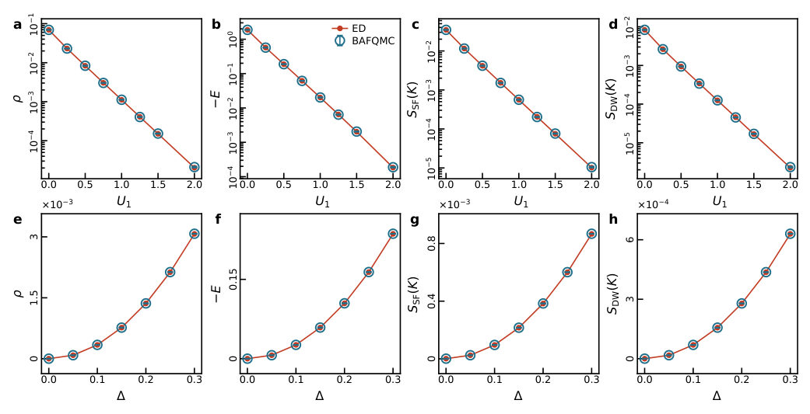
<figcaption class="paper-figure-caption"><b>Fig 2.</b> FIG. 2. BAFQMC versus exact diagonalization (ED) on a frustrated triangular lattice. Results for Eq. (6) on a periodic 3 × 3 lattice with 𝑡= 1 and inverse temperature 𝛽= 4. The simulations use ˆ𝐻−𝜇Í 𝑖( ˆ𝑛𝑏,𝑖+ ˆ𝑛𝑐,𝑖), where 𝜇is the chemical potential. (a–d) Interaction scan at Δ = 0 and 𝜇= −3.5. (e–h) Pairing scan at 𝑈1 = 1 and 𝜇= −5. The columns show the density per site 𝜌, negative energy −𝐸= −⟨ˆ𝐻⟩, and superfluid and density-wave structure factors 𝑆SF(𝐾) and 𝑆DW(𝐾) at a Brillouin-zone corner 𝐾. Red points are ED results; blue open circles are BAFQMC means with standard-error bars.</figcaption>
</figure>
<figure class="paper-figure-card">
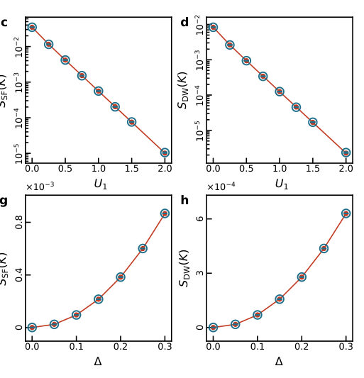
<figcaption class="paper-figure-caption"><b>Fig 3.</b> Figure 2 compares BAFQMC with finite-temperature exact diagonalization (ED) on a 3 × 3 triangular lattice with periodic boundary conditions. We set 𝑈2 = 0 and scan 𝑈1 at Δ = 0, then scan Δ at 𝑈1 = 1. The BAFQMC results coincide with ED within statistical errors for the density, energy, and both structure factors. Similar agreement for the attractive 𝑈2 interaction is shown in Sec. VII of the SM [126]. These benchmarks establish the reliability of BAFQMC.</figcaption>
</figure>
</div>

<p><strong>Summary.</strong> This paper introduces the Bosonic Auxiliary Field Quantum Monte Carlo (BAFQMC) method, providing rigorous mathematical proofs that the sign problem can be circumvented if the system Hamiltonian respects time-reversal symmetry or reflection positivity. By establishing these unifying symmetry principles, the method allows for unbiased, numerically exact simulations of highly frustrated bosonic quantum materials previously inaccessible to QMC techniques.</p>
<p><strong>Why it may be interesting.</strong> This work provides a powerful, symmetry-based theoretical tool to overcome a major computational bottleneck (the sign problem) in simulating complex bosonic quantum matter, directly impacting the study of exotic phases in ultracold atomic systems.</p>
<details>
<summary>Detailed structure</summary>
<p><strong>Main problem.</strong> The sign problem in Quantum Monte Carlo simulations fundamentally limits the study of interacting bosonic systems, especially those with geometric frustration.</p>
<p><strong>Main result.</strong> The authors developed the Bosonic Auxiliary Field Quantum Monte Carlo (BAFQMC) method and proved that time-reversal symmetry (TRS) or reflection positivity (RP) provide general sufficient conditions to eliminate the sign problem.</p>
<p><strong>Method.</strong> The core method is BAFQMC, which uses a Hubbard-Stratonovich transformation to decouple interactions, allowing the simulation to proceed by sampling auxiliary fields and evaluating the bosonic trace exactly.</p>
<p><strong>Model / system.</strong> The work applies to interacting bosonic systems, exemplified by the two-flavor Bose-Hubbard model on a triangular lattice, which is a highly frustrated system.</p>
<p><strong>Key observables.</strong> Superfluid coherence, staggered circulation, pair correlations, and energy/density structure factors.</p>
<p><strong>Important parameters / regimes.</strong> Frustrated lattices (e.g., triangular, kagome), temperature (T=0 and finite T), and interaction/hopping ratios.</p>
<p><strong>Assumptions / limitations.</strong> The primary assumption is that the Hamiltonian structure must possess sufficient symmetry (TRS or RP) to guarantee positive weight functions for the QMC simulation.</p>
<p><strong>Figures summary.</strong> Figures illustrate the sign-free regimes, showing BAFQMC operating where conventional methods fail on frustrated lattices, and compare BAFQMC results against exact diagonalization benchmarks.</p>
<p><strong>Paper structure.</strong> The paper first establishes the general theoretical framework by proving the TRS/RP criteria for sign-free QMC. It then applies this framework to specific physical models, such as the Bose-Hubbard model on the triangular lattice, demonstrating its utility for studying different pairing and superfluid phases.</p>
</details>
<details>
<summary>Abstract</summary>
<p>The sign problem poses a fundamental barrier to numerically exact quantum Monte Carlo simulations, severely hindering our understanding of quantum many-body physics across disciplines ranging from condensed matter to particle and nuclear physics. Geometrical frustration makes this barrier especially acute for interacting bosons. Here, we develop a bosonic auxiliary-field quantum Monte Carlo (BAFQMC) method and rigorously prove that time-reversal symmetry and reflection positivity each provide a general sufficient condition for sign-problem-free simulations. Crucially, under either criterion, BAFQMC evades the sign problem even on frustrated lattices where conventional world-line and stochastic-series-expansion methods fail. Benchmarking our approach on a two-flavor Bose-Hubbard model on the triangular lattice yields excellent quantitative agreement with finite-temperature exact diagonalization. By establishing unifying principles to solve the sign problem in BAFQMC, our work substantially expands the reach of unbiased, numerically exact simulations for frustrated bosonic matter.</p>
</details>
<p><sub><a href="#top">↑ back to top</a></sub></p>

<p><a id="paper-2610.31580"></a></p>
<h3 id="mixed-state-deep-thermalization-under-generic-quantum-errors"><a href="http://arxiv.org/abs/2610.31580v1">Mixed State Deep Thermalization under Generic Quantum Errors</a></h3>
<p><strong>Authors:</strong> Xie-Hang Yu, Pavel Kos<br>
<strong>Type:</strong> theory · <strong>Category:</strong> statistical mechanics · <strong>PDF:</strong> <a href="https://arxiv.org/pdf/2610.31580v1">https://arxiv.org/pdf/2610.31580v1</a><br>
<strong>Analysis basis:</strong> full PDF text, analyzed in chunks
<strong>Topic relevance:</strong> <code>methods for driven-dissipative</code> <strong>2/5</strong> · <code>Keldysh / 2PI / non-Gaussian methods</code> <strong>1/5</strong> · <code>analog quantum simulation</code> <strong>1/5</strong> · <code>correlated / nonlocal dissipation</code> <strong>1/5</strong> · <code>driven-dissipative phase transition</code> <strong>1/5</strong> · <code>non-equilibrium universality</code> <strong>1/5</strong> · <code>scars &amp; prethermalization</code> <strong>1/5</strong></p>
<div class="figure-strip-hint">↔ Scroll figures horizontally</div>
<div class="paper-figures-scroll">
<figure class="paper-figure-card">
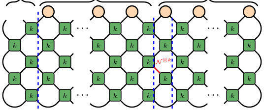
<figcaption class="paper-figure-caption"><b>Fig 1.</b> FIG. 1. Spatial contraction of the folded k-replica dual-unitary network, which gives rise to the ensemble raw moments ρ(k) NA. Green blocks represent (U ⊗U ∗)⊗k; orange circles denote replicated maximally entangled-basis measurement tensors, with the retained outcome shared across replicas and summed over; and the red segment denotes N ⊗k. Contraction proceeds from right to left through BR and BL. Blue dashed lines mark the raw tensors ρ(k) b , ρ(k) a , and ρ(k) f before the channel, after the channel, and after the second measured region, respectively. The vertical arrow shows the original circuit-time direction.</figcaption>
</figure>
<figure class="paper-figure-card">
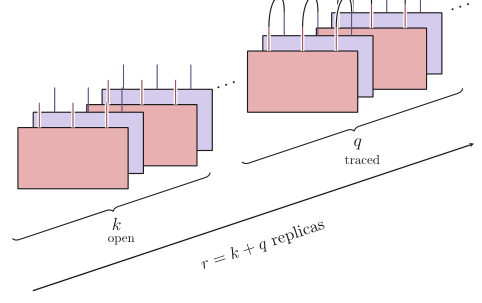
<figcaption class="paper-figure-caption"><b>Fig 2.</b> FIG. 2. Replica construction with r = k + q copies, shown in order from the lower left to the upper right, where q ≥0 is an integer. Each replica represents one copy of the con- ditional states eρNA(α), with ket and bra indices shown sep- arately in pale red and pale purple. The first k copies keep their retained-region indices open. In the other q copies, loops connect corresponding ket and bra indices to take the trace in Eq. (20). All copies share the same outcome α.</figcaption>
</figure>
<figure class="paper-figure-card">
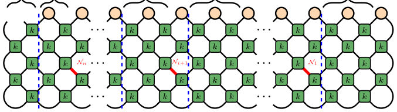
<figcaption class="paper-figure-caption"><b>Fig 3.</b> FIG. 3. Folded k-replica dual-unitary circuit with dilute local channels. Green gates, orange measurement tensors, and blue dashed raw cuts follow the conventions of Fig. 1; each red segment labeled Nj denotes N ⊗k j . Reading from right to left, the</figcaption>
</figure>
<figure class="paper-figure-card">
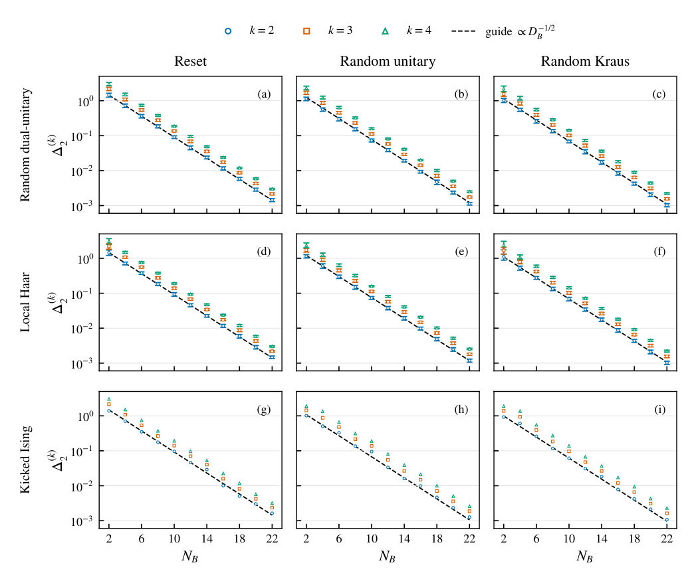
<figcaption class="paper-figure-caption"><b>Fig 4.</b> FIG. 5. Numerical moment distances from the CIE at d = 2 and NA = 2. Rows show random dual-unitary circuits, local Haar circuits, and kicked Ising dynamics; columns show the partial reset, random-unitary, and generic random Kraus channels. Circles, squares, and triangles denote k = 2, 3, 4, respectively. The evolution consists of 80 even–odd layer pairs for the random circuits and 80 periods for kicked Ising, with the channel applied halfway. In both random circuit cases, we show means of the distance ∆(k) 2 over 25 realizations, with error bars indicating the standard deviation. The kicked Ising dynamics use the evolution in Eq. (85). Black dashed lines show the scaling D−1/2 B ∝2−NB/2. In...</figcaption>
</figure>
</div>

<p><strong>Summary.</strong> This work addresses deep thermalization in noisy quantum systems by showing that the limiting state is not determined by the unitary dynamics but solely by the error channel's Choi state. The resulting universal ensemble is the Correlated Wishart Ensemble (CIE). This establishes a crucial link between quantum errors and the universal statistical mechanics of the steady state.</p>
<p><strong>Why it may be interesting.</strong> It directly extends the concept of deep thermalization from pure states to realistic, noisy quantum dynamics, providing a concrete, universal description of the steady state governed by environmental coupling.</p>
<details>
<summary>Detailed structure</summary>
<p><strong>Main problem.</strong> The paper investigates whether deep thermalization persists in quantum systems when local quantum errors (noise) are present, and characterizes the resulting universal limiting distribution.</p>
<p><strong>Main result.</strong> The late-time mixed-state projected ensemble is completely determined by the normalized Choi state of the error channel and is universal, independent of the microscopic unitary dynamics.</p>
<p><strong>Method.</strong> The analysis involves characterizing the Mixed-State Projected Ensemble (MSPE) using moment calculations, employing replica continuation techniques, and establishing analytical bounds for error terms.</p>
<p><strong>Model / system.</strong> The system is a many-body quantum system undergoing unitary evolution interspersed with local quantum error channels (CPTP maps). The analysis focuses on the evolution of the projected state ensemble.</p>
<p><strong>Key observables.</strong> Mixed-State Projected Ensemble (MSPE), normalized Choi state (M), Correlated Wishart Ensemble (CIE), and the normalized Schatten distance ($\Delta^{(k)}_\xi$).</p>
<p><strong>Important parameters / regimes.</strong> The local dimension ($d$), the number of error channels, and the scrambling time scale are key parameters; the result is shown to be independent of microscopic details.</p>
<p><strong>Assumptions / limitations.</strong> The analysis assumes sufficient scrambling and relies on techniques like replica continuation and bounding error terms using convexity arguments.</p>
<p><strong>Figures summary.</strong> Figures illustrate the spatial contraction of the folded k-replica dual-unitary network and the replica construction process used for moment calculations.</p>
<p><strong>Paper structure.</strong> The paper progresses by first defining the problem in the presence of noise, then deriving the limiting ensemble (CIE) based on the Choi state, and finally establishing rigorous analytical bounds on the convergence rate and error terms.</p>
</details>
<details>
<summary>Abstract</summary>
<p>Pure-state deep thermalization predicts that, after sufficient scrambling, projected ensembles approach universal distributions that contain information beyond the reduced density matrix. In realistic quantum systems, however, noise is unavoidable and the projected states are generally mixed. Whether mixed-state deep thermalization admits an analogous universal limiting distribution has remained unclear. Here we answer this question for quantum dynamics containing local quantum channels, i.e., errors. We show that the late-time mixed-state projected ensemble is completely determined by the normalized Choi state of the error channel and is universal, independent of the microscopic details of the underlying unitary dynamics. We establish this result analytically for dual-unitary circuits, global Haar-random dynamics, and local Haar-random circuits at large local dimension, and verify it numerically in qubit circuits and kicked Ising dynamics. In a solvable setting, we further find exponentially fast convergence to the limiting ensemble. Our results extend deep thermalization to noisy quantum dynamics and establish a direct correspondence between quantum errors and universal random mixed-state ensembles.</p>
</details>
<p><sub><a href="#top">↑ back to top</a></sub></p>

<p><a id="paper-2610.31390"></a></p>
<h3 id="orbital-coherence-memory-in-electrical-transport-and-its-self-consistent-maxwell-response"><a href="http://arxiv.org/abs/2610.31390v1">Orbital-coherence memory in electrical transport and its self-consistent Maxwell response</a></h3>
<p><strong>Authors:</strong> Pengfei Zhu<br>
<strong>Type:</strong> theory · <strong>Category:</strong> statistical mechanics · <strong>PDF:</strong> <a href="https://arxiv.org/pdf/2610.31390v1">https://arxiv.org/pdf/2610.31390v1</a><br>
<strong>Analysis basis:</strong> full PDF text, analyzed in chunks
<strong>Topic relevance:</strong> <code>Keldysh / 2PI / non-Gaussian methods</code> <strong>2/5</strong> · <code>methods for driven-dissipative</code> <strong>2/5</strong> · <code>correlated / nonlocal dissipation</code> <strong>1/5</strong> · <code>driven-dissipative phase transition</code> <strong>1/5</strong> · <code>non-equilibrium universality</code> <strong>1/5</strong> · <code>quantum measurements</code> <strong>1/5</strong></p>
<div class="figure-strip-hint">↔ Scroll figures horizontally</div>
<div class="paper-figures-scroll">
<figure class="paper-figure-card">
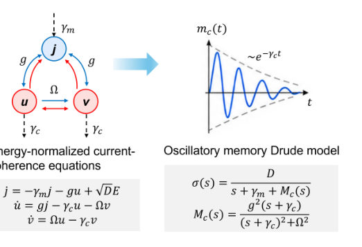
<figcaption class="paper-figure-caption"><b>Fig 1.</b> Figure 1. ...</figcaption>
</figure>
<figure class="paper-figure-card">
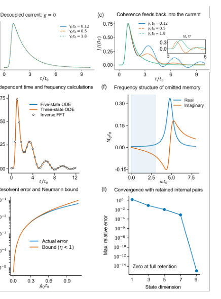
<figcaption class="paper-figure-caption"><b>Fig 2.</b> Figure 2. ...</figcaption>
</figure>
<figure class="paper-figure-card">
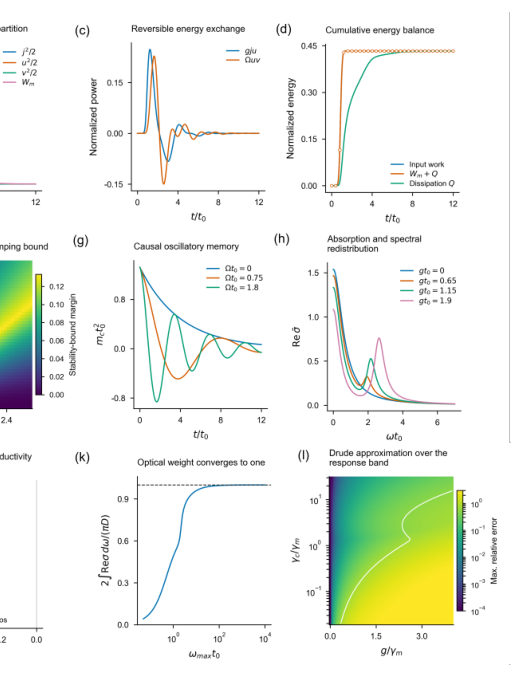
<figcaption class="paper-figure-caption"><b>Fig 3.</b> Figure 3. ...</figcaption>
</figure>
<figure class="paper-figure-card">
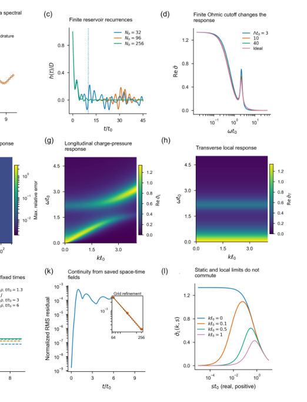
<figcaption class="paper-figure-caption"><b>Fig 4.</b> Figure 4. ...</figcaption>
</figure>
<figure class="paper-figure-card">
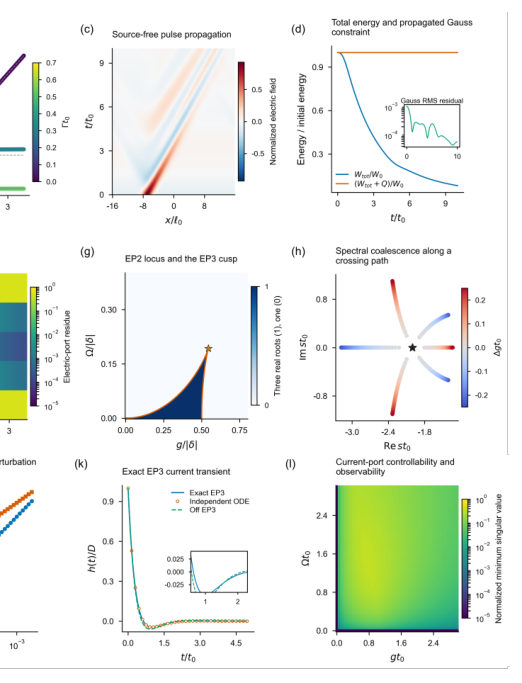
<figcaption class="paper-figure-caption"><b>Fig 5.</b> Figure 5. ...</figcaption>
</figure>
</div>

<p><strong>Summary.</strong> This theoretical work models electrical transport in a two-orbital system, focusing on how internal electronic coherence creates a memory effect that feeds back onto the current. By coupling this dynamics to Maxwell's equations, the authors derive the frequency-dependent conductivity, while rigorously cautioning that the resulting macroscopic description does not uniquely prove a specific quantum mechanism.</p>
<p><strong>Why it may be interesting.</strong> The detailed treatment of memory effects and the separation of constitutive response from electromagnetic modes provides a rigorous framework for modeling non-equilibrium quantum transport, which is relevant for understanding energy dissipation in nanoscale devices.</p>
<details>
<summary>Detailed structure</summary>
<p><strong>Main problem.</strong> The paper investigates how internal electronic coherence influences electrical transport, developing a reduced description of the feedback mechanism and its coupling to self-consistent Maxwell equations.</p>
<p><strong>Main result.</strong> The model predicts a passive three-state response with an exponentially damped oscillatory memory, and establishes a conditional link between orbital dynamics, transport memory, and electromagnetic observables.</p>
<p><strong>Method.</strong> The authors employ linear response theory, projection techniques, and moment closure approximations to derive reduced equations of motion for the coupled system.</p>
<p><strong>Model / system.</strong> The system is a two-orbital conducting model (e.g., s-p_x doublet) whose dynamics are governed by a Hamiltonian, leading to coupled equations of motion that are extended to include self-consistent Maxwell responses.</p>
<p><strong>Key observables.</strong> Conductivity $\sigma(\omega)$, complex-conductivity $M_c(s)$, DC conductivity $\sigma_{DC}$, longitudinal ($\sigma_L$) and transverse ($\sigma_T$) conductivities.</p>
<p><strong>Important parameters / regimes.</strong> Bare splitting ($\Omega_0$), hybridization ($g$), and damping rates ($\gamma_m, \gamma_c$).</p>
<p><strong>Assumptions / limitations.</strong> The analysis relies on an explicitly stated moment closure and collision ansatz, which are approximations, and the model's predictions are shown not to be unique to a quantum mechanism.</p>
<p><strong>Figures summary.</strong> Figures illustrate the Hamiltonian, the definition of orbital polarization, the normal form coordinates with the constraint $g^2 + \Omega^2 = \Omega_0^2$, and the final reduced equations of motion.</p>
<p><strong>Paper structure.</strong> The paper progresses from defining the microscopic Hamiltonian and deriving initial equations of motion, through applying moment closure and reducing the system to a normal form, then extending the analysis to include self-consistent Maxwell coupling and analyzing the resulting frequency-dependent transport properties.</p>
</details>
<details>
<summary>Abstract</summary>
<p>An internal electronic coherence changes electrical transport only when it feeds back on the physical current. We develop a reduced description of this feedback and distinguish its exact consequences from the assumptions required for a microscopic realization. An opposite-parity two-orbital Hamiltonian identifies a current-coupled orbital force. Under an explicitly stated moment closure and collision ansatz, it yields a passive three-state response with an exponentially damped oscillatory memory. The resulting conductivity redistributes a fixed optical weight and predicts a nonmonotonic dependence of dc conduction on coherence damping at fixed remaining parameters. The orbital reduction constrains the coupling and internal frequency through a shared bare splitting, providing a test beyond unconstrained spectral fitting. A charge-conserving spatial extension couples to Maxwell equations through a positive energy balance and separates the constitutive response from longitudinal collective and transverse electromagnetic modes. We formulate complex-conductivity and transmission tests, including the limits of parameter identification over a finite bandwidth. The model supplies a conditional connection between orbital dynamics, transport memory, and electromagnetic observables; conductivity alone does not establish a uniquely quantum mechanism, and a material-specific collision calculation and closure-error assessment remain necessary.</p>
</details>
<p><sub><a href="#top">↑ back to top</a></sub></p>

<p><a id="paper-2610.30857"></a></p>
<h3 id="all-photonic-millimeter-wave-and-terahertz-signal-core-at-room-and-cryogenic-temperatures"><a href="http://arxiv.org/abs/2610.30857v1">All-photonic millimeter-wave and terahertz signal core at room and cryogenic temperatures</a></h3>
<p><strong>Authors:</strong> Jiawen Liu, Chengli Wang, Aleksei Gaier, Tianyi Zhang, Gabriel Jülg, Yazan Lampert, André Garcia Primo, Alessandro Tomasino, Hua Li, Xin Ou, Ileana-Cristina Benea-Chelmus<br>
<strong>Type:</strong> experiment · <strong>Category:</strong> other · <strong>PDF:</strong> <a href="https://arxiv.org/pdf/2610.30857v1">https://arxiv.org/pdf/2610.30857v1</a><br>
<strong>Analysis basis:</strong> full PDF text, analyzed in chunks
<strong>Topic relevance:</strong> <code>analog quantum simulation</code> <strong>2/5</strong> · <code>quantum optics experiment</code> <strong>2/5</strong> · <code>QC/QI experiment</code> <strong>1/5</strong> · <code>driven-dissipative phase transition</code> <strong>1/5</strong> · <code>interference shaping light</code> <strong>1/5</strong></p>
<div class="figure-strip-hint">↔ Scroll figures horizontally</div>
<div class="paper-figures-scroll">
<figure class="paper-figure-card">
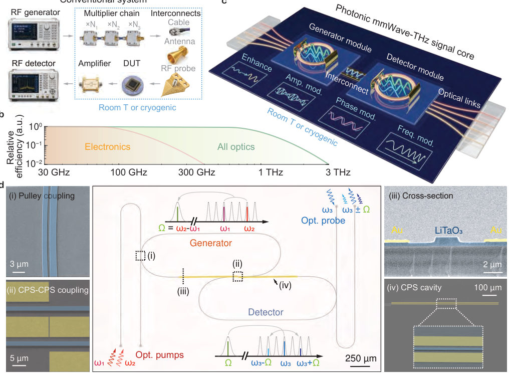
<figcaption class="paper-figure-caption"><b>Fig 1.</b> Fig. 1. Photonic signal core for mmWave-THz frequencies. a. Conventional electronic signal chain using separate components for signal generation, transfer, and detection. b. Conceptual comparison of the spectral coverage accessible using conventional electronic and all-photonic systems. c. Photonic signal-core architecture integrating a generator, an on-chip interconnect and a detector on a single chip. The architecture provides resonant field enhancement and optical control of the amplitude, phase and frequency of the mmWave-THz signal. d. Optical micrograph (main panel) and false-color scanning electron micrographs (insets) of the fabricated signal core. The architecture comprises...</figcaption>
</figure>
<figure class="paper-figure-card">
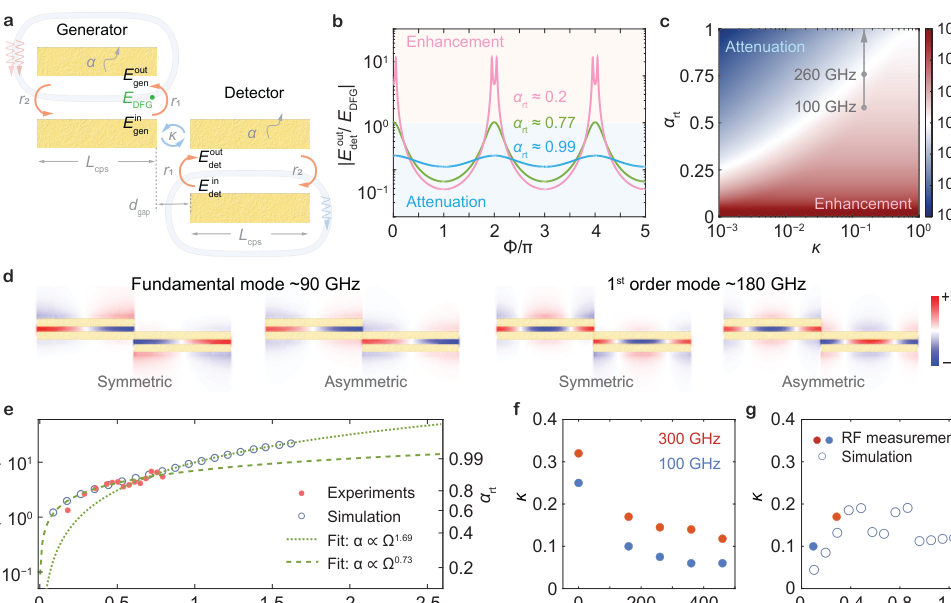
<figcaption class="paper-figure-caption"><b>Fig 2.</b> Fig. 2. Coupled mmWave-THz CPS structures. a. Schematic of the coupled CPS cavities with internal electro-optic drive and readout. Each CPS is described by a power-attenuation coefficient α, an inter-cavity field-coupling coefficient κ, and field-reflection coefficients r1 and r2 at the indicated boundaries. b. Calculated amplitude-transfer factor |Eout det/EDFG| for representative combinations of coupling coeffi- cients κ and round-trip attenuation factor αrt, showing resonant enhancement and attenuation regimes. c. Amplitude-transfer factor Eout det/EDFG as a function of κ and αrt. Blue and red regions denote attenuation  Eout det/EDFG &lt; 1  and resonant enhancement  Eout det/EDFG &gt; 1...</figcaption>
</figure>
<figure class="paper-figure-card">
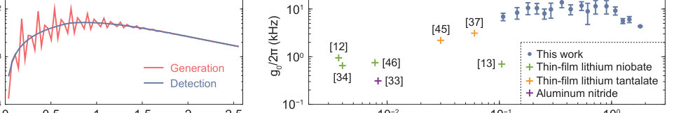
<figcaption class="paper-figure-caption"><b>Fig 3.</b> Fig. 3. Monolithic mmWave-THz generation, on-chip transfer and detection. a. Schematic of the room-temperature experimental setup for mmWave-THz generation and detection. EDFA, erbium-doped fiber amplifier; DUT, device under test; OSA, optical spectrum analyzer. Blue lines denote optical-fiber connections. b. Representative optical spectra measured after the generator (red) and detector (blue) at Ω/2π = 360 GHz. Sidebands at ω3 ± Ωarise from electro-optic upconversion of the mmWave-THz field generated and transferred on chip. Spectral features at the generator output are attributed to combined χ(2)</figcaption>
</figure>
<figure class="paper-figure-card">
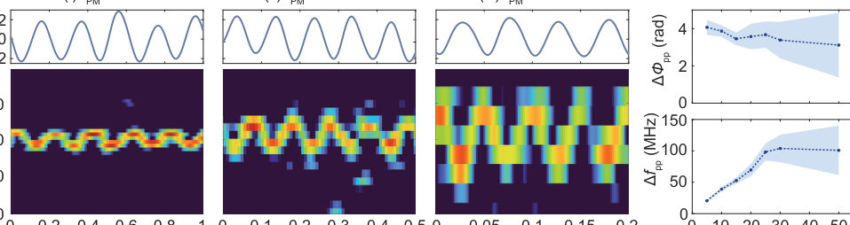
<figcaption class="paper-figure-caption"><b>Fig 4.</b> Fig. 4. Programmable control of a mmWave-THz field at 360 GHz a. Schematic of the ex- perimental setup for amplitude and phase control. An arbitrary waveform generator (AWG) drives an off-chip intensity modulator (IM) or phase modulator (PM), and the detector sideband is measured by heterodyne detection. EDFA, erbium-doped fiber amplifier; LNA, low-noise amplifier; HD, heterodyne detection; FC, fiber coupler. Optical and electrical paths are shown in blue and yellow, respectively. b. Temporal envelope of the heterodyne signal under square-wave intensity modulation at fIM = 5 and 20 MHz with a 50% duty cycle. Traces are cropped to four modulation periods for clarity. c. Rising and falling...</figcaption>
</figure>
<figure class="paper-figure-card">
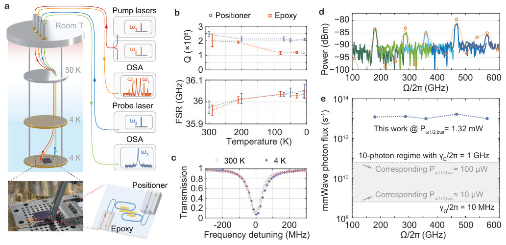
<figcaption class="paper-figure-caption"><b>Fig 5.</b> Fig. 5. Cryogenic operation of the signal core. a. Cryogenic measurement configuration and fiber interfaces to the photonic chip. A permanently bonded two-channel fiber array couples the optical pumps into the generator module, with a fiber-to-chip coupling efficiency of 22%. A second fiber array, mounted on a cryogenic piezoelectric positioner, couples probe light into the detector module with an efficiency of 5%, limited by the restricted angular adjustability of the positioner. The chip is mounted on the still plate of a dilution refrigerator and operated at approximately 4 K. b. Loaded optical quality factors (top) and free spectral ranges (bottom) of the epoxy-packaged generator...</figcaption>
</figure>
</div>

<p><strong>Summary.</strong> This paper presents an all-photonic signal core built on a monolithic lithium tantalate chip to address signal transmission limitations in the millimeter-wave and terahertz regimes. By integrating generation, modulation, and detection functions entirely on-chip using optical links, the system achieves high performance up to 2.5 THz, even when cooled to 4 K. This establishes a compact, low-loss platform for next-generation high-frequency quantum and classical applications.</p>
<p><strong>Why it may be interesting.</strong> This work provides a highly integrated, chip-scale platform for high-frequency signal processing that bypasses electrical interconnect limitations, which is crucial for quantum sensing and quantum networking components operating at cryogenic temperatures.</p>
<details>
<summary>Detailed structure</summary>
<p><strong>Main problem.</strong> The primary challenge is overcoming the limitations of conventional electrical signal chains above 100 GHz for mmWave and THz applications due to inherent losses and noise.</p>
<p><strong>Main result.</strong> The authors demonstrated an all-photonic signal core on a monolithic LiTaO3 chip capable of generating, modulating, routing, and detecting signals from 100 GHz to 2.5 THz using only fiber-based optical links.</p>
<p><strong>Method.</strong> The system utilizes bidirectional coherent electro-optic conversion within a chip architecture that integrates high-frequency functional modules using micro-coplanar striplines.</p>
<p><strong>Model / system.</strong> The physical platform is a monolithic lithium tantalate photonic chip acting as a signal core. It employs resonant enhancement via triply resonant converters to couple optical pumps to the microwave/THz signal, enabling end-to-end operation.</p>
<p><strong>Key observables.</strong> Single-photon electro-optic coupling rates (e.g., 10 kHz), peak drive-power-normalized photon-flux conversion efficiencies (1.0%/mW for generation), and stable operation down to 4 K.</p>
<p><strong>Important parameters / regimes.</strong> Operating frequency range (100 GHz to 2.5 THz), cryogenic temperature (4 K), and high field-enhancement factors (up to 121.8 for sidebands).</p>
<p><strong>Assumptions / limitations.</strong> The performance is governed by a trade-off between resonant coupling enhancement and signal loss, and the system relies on maintaining multiple spectral alignments (triply resonant condition).</p>
<p><strong>Figures summary.</strong> Figures illustrate the comparison between electronic and photonic signal chains, the fabricated chip structure, and optical characterization showing loaded quality factors and spectral features.</p>
<p><strong>Paper structure.</strong> The paper details the architecture, focusing on the resonant enhancement mechanism using DFG and electro-optic modulation. It presents measurements validating the performance at both room and cryogenic temperatures, analyzing power flow and coupling coefficients.</p>
</details>
<details>
<summary>Abstract</summary>
<p>Millimeter-wave and terahertz technologies offer new opportunities for high-capacity communications, sensing, and quantum systems, but electronic signal chains above 100 GHz are limited by weak sources, noisy receivers, and lossy interconnects. Photonic approaches mitigate these constraints by enabling chip-scale high-frequency components, yet existing implementations generally retain lossy off-chip electrical or free-space links, hindering dense and compact integration for cryogenic or space-constrained settings. Here, we show a monolithic lithium tantalate photonic chip, termed a signal core, which generates, modulates, routes, and detects continuous-wave signals at discrete frequencies between 100 GHz and 2.5 THz. The architecture integrates high-frequency functional modules on chip and uses exclusively fiber-based optical interfaces. Bidirectional coherent electro-optic conversion enables signal generation, detection, and nanosecond-scale amplitude and phase modulation, while micro-coplanar striplines interconnect the modules into an end-to-end signal chain on a single chip. Our modules achieve single-photon electro-optic coupling rates of g_0/2π=10 kHz and peak drive-power-normalized photon-flux conversion efficiencies of 1.0%/mW for generation and 0.5%/mW for detection. It also operates at 4 K in a dilution refrigerator through the same fiber-only optical links. Together, these capabilities establish an all-photonic platform for millimeter-wave-to-terahertz systems and offer a broadly applicable architecture for applications constrained by electrical-interconnect loss, heat load, and footprint.</p>
</details>
<p><sub><a href="#top">↑ back to top</a></sub></p>

<p><a id="paper-2610.30241"></a></p>
<h3 id="vacancy-driven-topological-transition-of-a-chern-insulator"><a href="http://arxiv.org/abs/2610.30241v1">Vacancy-driven topological transition of a Chern insulator</a></h3>
<p><strong>Authors:</strong> Peize Ding, Raquel Queiroz<br>
<strong>Type:</strong> theory · <strong>Category:</strong> disordered systems and neural networks · <strong>PDF:</strong> <a href="https://arxiv.org/pdf/2610.30241v1">https://arxiv.org/pdf/2610.30241v1</a><br>
<strong>Analysis basis:</strong> full PDF text, analyzed in chunks
<strong>Topic relevance:</strong> <code>Keldysh / 2PI / non-Gaussian methods</code> <strong>2/5</strong> · <code>methods for driven-dissipative</code> <strong>2/5</strong> · <code>analog quantum simulation</code> <strong>1/5</strong> · <code>quantum measurements</code> <strong>1/5</strong></p>
<div class="figure-strip-hint">↔ Scroll figures horizontally</div>
<div class="paper-figures-scroll">
<figure class="paper-figure-card">
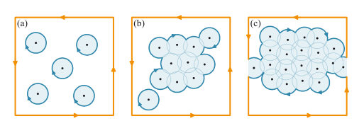
<figcaption class="paper-figure-caption"><b>Fig 1.</b> FIG. 1. Schematic real-space picture for a vacancy- disordered Chern insulator: black dots mark vacancies, light- blue circles denote the bound ring states, and the orange boundary mode is the parent chiral edge state. (a) Dilute vacancies support isolated ring states, and the edge mode per- sists. (b) Overlapping ring states hybridize into a connected cluster with a chiral boundary mode. (c) A spanning cluster reconnects the chiral modes into separate loops rather than a mode encircling the full sample. Hybridization of the ring states produces an impurity band. In the periodic vacancy lattice, its inversion contributes ∆C = −1, opposite to the parent bulk’s C = +1, leaving a topologically...</figcaption>
</figure>
<figure class="paper-figure-card">
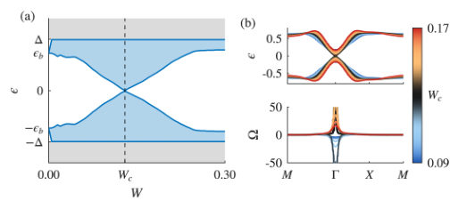
<figcaption class="paper-figure-caption"><b>Fig 2.</b> FIG. 2. (a) Energy solutions SW (blue region) as a function of vacancy concentration W; the gray region denotes the bulk continuum. At Wc ≈0.120 the bands of h′(ϵ = 0) touch at ϵ = 0, signaling the topological phase transition. (b) Spec- trum and Berry curvature Ωof h′(ϵ = 0) in the mini-Brillouin zone of the ring-state lattice as a function of W. Near Wc (black) the spectrum exhibits a gapped Dirac cone whose mass changes sign, producing a relative Berry-flux transfer of −2π at Γ in the effective low-energy description. Param- eters: m = 3.5, t = 2, v = 0.8, for which ∆≃0.462 and ϵb ≃0.337.</figcaption>
</figure>
<figure class="paper-figure-card">
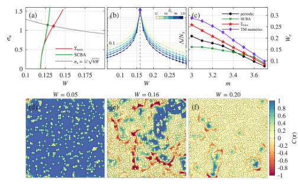
<figcaption class="paper-figure-caption"><b>Fig 3.</b> FIG. 3. Random defect-band transition (t = 2, v = 0.8). (a) Phase boundary in the (W, σu) plane located by the topo- logical Hamiltonian method for m = 3.5, with σ2 u = ⟨|δ|2⟩. Red and green show the numerical disorder-averaged self- energy Σnum and SCBA; the dotted line denotes the heuristic density-and-second-moment matching σu = 1/ √</figcaption>
</figure>
</div>

<p><strong>Summary.</strong> This work microscopically describes how vacancies induce a topological phase transition in a Chern insulator. By analyzing the hybridization of in-gap ring states, the authors predict that increasing disorder causes a band inversion, leading to the collapse of the bulk Chern number. The transition point is robustly determined using multiple advanced theoretical techniques, including SCBA and multifractal scaling.</p>
<p><strong>Why it may be interesting.</strong> The study provides a detailed, quantitative link between structural disorder (vacancies) and the destruction of topological order, using advanced diagnostic tools like local Chern markers and multifractal analysis applicable to disordered quantum systems.</p>
<details>
<summary>Detailed structure</summary>
<p><strong>Main problem.</strong> The paper develops a microscopic theory to understand how strong disorder, specifically introduced via vacancies, drives a topological phase transition in a Chern insulator.</p>
<p><strong>Main result.</strong> The topological transition is marked by the band touching at a critical vacancy concentration ($W_c$), causing a band inversion that changes the system's Chern number from $C=1$ to $C=0$.</p>
<p><strong>Method.</strong> The study employs Green's function formalism, analyzing the system in both periodic and disordered limits using the Self-Consistent Born Approximation (SCBA), Transfer Matrix (TM) scaling, and multifractal analysis.</p>
<p><strong>Model / system.</strong> The system is a Chern insulator, prototyped by the QWZ model, whose low-energy physics is described by hybridized in-gap ring states formed due to vacancies acting as impurities.</p>
<p><strong>Key observables.</strong> Chern number ($C$), local Chern marker, current textures, localization length ($\Lambda/N_y$), and multifractal scaling exponents ($ ilde{   au}_q$).</p>
<p><strong>Important parameters / regimes.</strong> Vacancy concentration ($W$), critical concentration ($W_c$), and the clean system mass parameter ($m$).</p>
<p><strong>Assumptions / limitations.</strong> The analysis treats weak positional disorder using SCBA and studies strong disorder using transfer-matrix and multifractal scaling methods.</p>
<p><strong>Figures summary.</strong> Figures illustrate the schematic transition from isolated ring states to a trivial state, show the evolution of Berry curvature across the transition, and present localization length scans and multifractal scaling plots to determine $W_c$ and critical exponents.</p>
<p><strong>Paper structure.</strong> The paper progresses from establishing the microscopic Hamiltonian and the role of ring states in the topological phase, to analyzing the transition in a periodic lattice, and finally extending the analysis to weak and strong positional disorder using advanced scaling techniques.</p>
</details>
<details>
<summary>Abstract</summary>
<p>We develop a microscopic description of the strong-disorder transition in a Chern insulator using the in-gap ring states bound to individual vacancies. Using Green's function formalism, we construct an energy-dependent Hamiltonian describing their hybridization. In a commensurate periodic vacancy lattice, a Dirac inversion of the zero-energy vacancy kernel accounts for the change in the occupied-state Chern number of the full system. We treat weak positional disorder using the self-consistent Born approximation and numerical disorder averaging, and study independently distributed vacancies using transfer-matrix and multifractal scaling. The local Chern marker and current textures track the transition in real space. Together, these results highlight the role that nonperturbative ring states have as microscopic degrees of freedom through which strong disorder destroys the Chern phase.</p>
</details>
<p><sub><a href="#top">↑ back to top</a></sub></p>

<p><a id="paper-2610.30301"></a></p>
<h3 id="non-adiabatic-optimisation-via-localisation-delocalisation-transitions"><a href="http://arxiv.org/abs/2610.30301v1">Non-adiabatic Optimisation via Localisation-Delocalisation Transitions</a></h3>
<p><strong>Authors:</strong> Ryan Smith, Sabrina Yue Wang, Filippo Maria Gambetta, Raul A. Santos<br>
<strong>Type:</strong> theory · <strong>Category:</strong> disordered systems and neural networks · <strong>PDF:</strong> <a href="https://arxiv.org/pdf/2610.30301v1">https://arxiv.org/pdf/2610.30301v1</a><br>
<strong>Analysis basis:</strong> full PDF text, analyzed in chunks
<strong>Topic relevance:</strong> <code>analog quantum simulation</code> <strong>2/5</strong> · <code>Keldysh / 2PI / non-Gaussian methods</code> <strong>1/5</strong> · <code>methods for driven-dissipative</code> <strong>1/5</strong> · <code>quantum measurements</code> <strong>1/5</strong></p>
<div class="figure-strip-hint">↔ Scroll figures horizontally</div>
<div class="paper-figures-scroll">
<figure class="paper-figure-card">
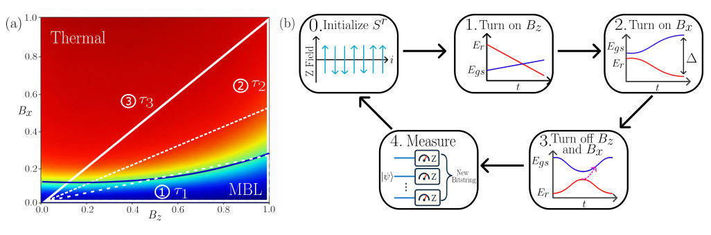
<figcaption class="paper-figure-caption"><b>Fig 1.</b> Figure 1. (a): Approximate phase diagram of the SK model of eq. (21) for small system sizes achievable using exact diago- nalization (ED) for N = 12, showing the first three steps of the quench protocol for χ = 0.25 (dotted), χ = 0.5 (dashed), and χ = 1 (solid). The blue line is the approximate critical line that separates the many-body localized phase from the thermal delocalized phase that the cyclic algorithm must traverse to be successful. (b): Pictorial demonstration of the steps of FRIO. We initialise the direction of the longitudinal fields according to the reference state, followed by a series of three quenches which traverses the triangular path of the phase diagram according to...</figcaption>
</figure>
<figure class="paper-figure-card">
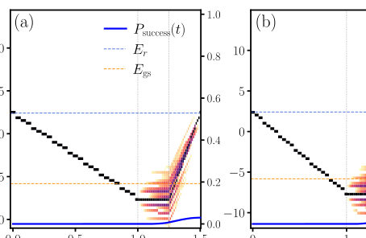
<figcaption class="paper-figure-caption"><b>Fig 2.</b> Figure 2. Evolution of the spectral weight s(E, t) = P</figcaption>
</figure>
<figure class="paper-figure-card">
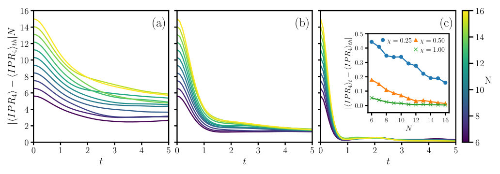
<figcaption class="paper-figure-caption"><b>Fig 3.</b> Figure 3. Marginal IPR dynamics for parameter testing experiments using SK type graphs. (a): The short-time dynamics of the rescaled IPR for a 4-qubit marginal performed at χ = 0.25 and multiple system sizes given by the colour bar. (b)-(c): The same as (a) but instead for χ = 0.5 and χ = 1, respectively. In all panels, ⟨IPR4⟩th = 1/24, the expected thermal value of the 4-qubit subsystem. Inset: Time average of the late-time IPR dynamics shifted by ⟨IPR4⟩th as a function of system size taken between t = 30 and t = 50. All simulations were performed using ED with Bz = 1 and we average over 100 reference states and 10 SK graph instances.</figcaption>
</figure>
<figure class="paper-figure-card">
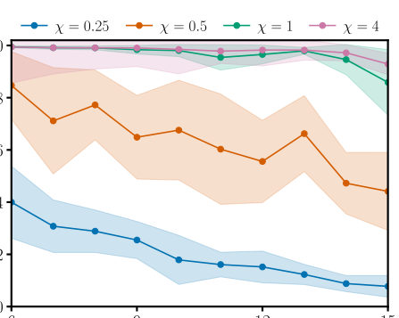
<figcaption class="paper-figure-caption"><b>Fig 4.</b> Figure 4. Fraction of the number of shots that successfully measure the ground state for an instances of SK graphs using continuous FRIO. We choose multiple values of χ that lie close to the MBL transition point and in the thermal regime. For each graph instance we randomly select 50 starting reference states and allocate 1000 shots to the FRIO protocol. All simulations have been performed for graphs with N between 6 and 15 nodes and averaged over 10 graph instances, with the semi-transparent shaded areas representing the statistical error. We also set Bz = 1.</figcaption>
</figure>
<figure class="paper-figure-card">
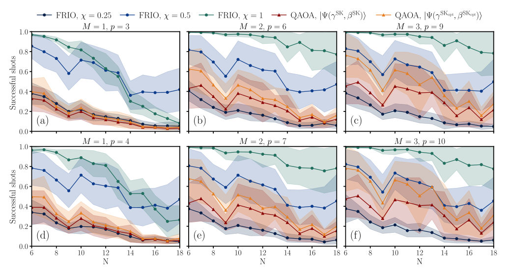
<figcaption class="paper-figure-caption"><b>Fig 5.</b> Figure 5. Fraction of the number of shots that successfully solve the max-cut problem for an instance of an SK graph using digitised FRIO and a QAOA circuit of the same depth of Trotter layers. Panels (a)-(c) use a first-order Trotter decomposition with M = 1, 2, 3 Trotter steps for χ = 0.25, 0.5, 1 which is compared to a QAOA circuit of depth p = 3, 6, 9. Panels (d)-(f) use a second-order Trotter decomposition with M = 1, 2, 3 Trotter steps and are compared to a QAOA circuit of depth p = 4, 7, 10. For the cyclic optimisation algorithm we randomly select 50 starting reference states and allocate 1000 shots to the cyclic optimisation protocol. For QAOA we take 5 × 104 samples for each graph...</figcaption>
</figure>
</div>

<p><strong>Summary.</strong> This work introduces FRIO, a quantum optimization algorithm designed to overcome the limitations of adiabatic quantum annealing when approaching Many-Body Localization transitions. By analyzing the system's dynamics through an effective Fokker-Planck equation, the authors show that the required annealing time can be drastically reduced to O(1). The results suggest FRIO outperforms standard QAOA for finding the ground state of spin-glass models.</p>
<p><strong>Why it may be interesting.</strong> The focus on non-adiabatic dynamics, localization transitions, and the comparison to established quantum algorithms (QAOA) provides deep insights into the fundamental limitations and potential speedups of quantum computation for hard optimization problems.</p>
<details>
<summary>Detailed structure</summary>
<p><strong>Main problem.</strong> The paper addresses the challenge of efficiently solving classical optimization problems, specifically finding the ground state of spin-glass models, using quantum computation.</p>
<p><strong>Main result.</strong> A novel algorithm, FRIO, is proposed that can traverse the localization-delocalization transition, achieving an annealing time scaling of O(1) compared to previous polynomial scaling.</p>
<p><strong>Method.</strong> The authors analyze the continuous reverse quantum annealing process by interpreting its success probability via an effective Fokker-Planck equation and developing a discrete Trotterized protocol.</p>
<p><strong>Model / system.</strong> The primary model is the disordered spin-glass system, exemplified by the Sherrington-Kirkpatrick (SK) model, which serves as a paradigm for Many-Body Localization (MBL). The evolution is governed by time-dependent Hamiltonians involving longitudinal and transverse fields.</p>
<p><strong>Key observables.</strong> Success probability of the algorithm, spectral weight $s(E, t)$, Inverse Participation Ratio (IPR), and the success ratio for finite-size scaling.</p>
<p><strong>Important parameters / regimes.</strong> System size $N$, annealing time $t_f$, initial energy density $\epsilon$, and Trotterization steps $M$.</p>
<p><strong>Assumptions / limitations.</strong> The analysis relies on interpreting the dynamics through an effective Fokker-Planck equation and approximating the continuous evolution using Trotter steps for near-term devices.</p>
<p><strong>Figures summary.</strong> Figures illustrate the SK model phase diagram via level statistics (Poissonian vs. GOE), show IPR dynamics in different bases, and plot the success ratio vs. system size for various Trotter orders.</p>
<p><strong>Paper structure.</strong> The paper first establishes the problem in quantum optimization on spin glasses, develops the FRIO protocol by analyzing the non-adiabatic crossing of the MBL transition, provides a theoretical framework using Fokker-Planck equations, and concludes with numerical comparisons against QAOA and finite-size scaling analyses.</p>
</details>
<details>
<summary>Abstract</summary>
<p>The promise of efficiently solving classical optimisation problems on quantum computers is tantalizing. As many such problems can be mapped to approximating the ground state of spin-glasses, paradigmatic models for studying many-body localisation, it is natural to ask if some of the intuition coming from quantum statistical mechanics can help guide the construction of novel quantum optimisation algorithms. In this work, we discuss how continuous reverse quantum annealing crossing a many-body localisation transition can be accelerated by considering the density of Landau-Zener crossings as the system is quenched. We provide an interpretation of this behaviour in terms of an effective Fokker-Planck equation for the success probability of the algorithm. This interpretation suggests an improvement in the required annealing time as a function of the system size $N$, which goes from $\mathcal{O}({\rm poly}(N))$ to $\mathcal{O}(1)$ for reference states with non-vanishing energy density. We show that the continuous dynamics can be Trotterised with a number of steps that remains modest as system size increases, making it appealing for near-term devices. For the resulting circuit implementation, we provide a quantitative strategy for determining the parameters of the time-dependent Hamiltonian. We compare the performance of our digitised algorithm, which we call FRIO, against that of the QAOA for finding the ground state of spin-glass problems, in particular the SK model. The numerical results suggest that with suitably selected circuit parameters which can be efficiently found using thermalizing dynamics, FRIO almost always outperforms the conventional QAOA ansatz with pre-optimized angles.</p>
</details>
<p><sub><a href="#top">↑ back to top</a></sub></p>

<p><a id="paper-2610.30321"></a></p>
<h3 id="extreme-competition-between-stripes-and-superconductivity-in-the-hole-doped-hubbard-model"><a href="http://arxiv.org/abs/2610.30321v1">Extreme competition between stripes and superconductivity in the hole-doped Hubbard model</a></h3>
<p><strong>Authors:</strong> Ao Chen, Johnnie Gray, Si-Jing Du, Garnet Kin-Lic Chan<br>
<strong>Type:</strong> theory · <strong>Category:</strong> strongly correlated electrons · <strong>PDF:</strong> <a href="https://arxiv.org/pdf/2610.30321v1">https://arxiv.org/pdf/2610.30321v1</a><br>
<strong>Analysis basis:</strong> full PDF text, analyzed in chunks
<strong>Topic relevance:</strong> <code>analog quantum simulation</code> <strong>2/5</strong> · <code>methods for driven-dissipative</code> <strong>2/5</strong></p>
<div class="figure-strip-hint">↔ Scroll figures horizontally</div>
<div class="paper-figures-scroll">
<figure class="paper-figure-card">

<figcaption class="paper-figure-caption"><b>Fig 1.</b> FIG. 1. Low-energy competing states of the Hubbard model and illustrative biases of each variational wavefunction. (a) The Hubbard model with nearest-neighbor hopping t, next-nearest-neighbor hopping t′, and on-site repulsion U, along with three common candidate ground states at 1/8 hole doping. Recent studies report the stripe (including SDW, CDW, and their coexistence) at t′ = 0 [11–15, 20–22] and t′ = −0.2 [19–22], the stripe + SC at t′ = −0.2 [15, 18], and the uniform d-wave SC at t′ = 0 [13]. (b) The structure that carries the fermionic correlations in each ansatz (left) and, schematically, the relative variational energies of the three ansatzes for the three states in (a) (right).</figcaption>
</figure>
<figure class="paper-figure-card">

<figcaption class="paper-figure-caption"><b>Fig 2.</b> FIG. 2. NN-fPEPS ansatz and optimization loop. (a) A neural network (middle, much deeper in practice) maps the configuration n (bottom) to the local tensors T [i](n) of the fPEPS (top), whose higher-order tensor renormalization group (HOTRG) contraction gives ψNN-fPEPS(n). The backflow states replace the fPEPS by the Pfaffian or determinant [Eqs. (5) and (6)]. (b) Monte Carlo sampling of the NQS ψθ(n) yields E and ∇E, from which the optimization updates the variational parameters θ. Zoomed-in boxes show other important computational components: custom GPU kernels, symmetry projection of the states, the adaptive moment stochastic reconfiguration (AdamSR) optimizer combining momentum with the...</figcaption>
</figure>
<figure class="paper-figure-card">

<figcaption class="paper-figure-caption"><b>Fig 3.</b> FIG. 3. Energies and orders of the symmetry-projected states in the pure Hubbard model at t′ = 0 and 1/8 doping with PBC. (a) Variational energy per site E/N against the system size. For reference, we include the variational energies of the determinant backflow ACE (red) and SCALE in Ref. [21], obtained without symmetry projection, and the hidden fermion Pfaffian state (HFPS) in Ref. [15]. We also show an estimated exact energy obtained by extrapolation of a pure fPEPS calculation with PBC (SM Sec. VI [34]). (b) Pair-pair correlation function Cp(|r|) as defined in Eq. (2) on the 16 × 16 lattice. For the determinant backflow state, open circles show |Cp| where Cp &lt; 0, and the normal-state...</figcaption>
</figure>
<figure class="paper-figure-card">

<figcaption class="paper-figure-caption"><b>Fig 4.</b> FIG. 4. Energies and orders of the symmetry-projected states in the t–t′ Hubbard model, the same as Fig. 3 but with t′ = −0.2 (1/8 doping). The BCS backflow data are extracted from Ref. [26]. In (c), the CP-AFQMC result is from Ref. [18], and the stripe order of the BCS backflow state is fitted in 1/L2.</figcaption>
</figure>
</div>

<p><strong>Summary.</strong> This paper investigates the complex ground state of the hole-doped Hubbard model, which is crucial for understanding high-temperature superconductivity. By employing advanced neural tensor network simulations, the authors demonstrate that the system does not favor a single ordered state but rather exists in a regime of extreme competition between superconducting pairing and charge/spin stripe formation. This work significantly advances the numerical understanding of strongly correlated electron physics.</p>
<p><strong>Why it may be interesting.</strong> The advanced use of neural tensor networks (NN-fPEPS) to tackle strongly correlated electron models represents a cutting-edge application of machine learning to condensed matter physics, providing highly accurate benchmarks for complex quantum systems.</p>
<details>
<summary>Detailed structure</summary>
<p><strong>Main problem.</strong> To resolve the uncertainty regarding the ground state order (superconductivity vs. stripes) in the hole-doped Hubbard model, which is highly sensitive to computational methods.</p>
<p><strong>Main result.</strong> The work suggests a picture of extreme competition between stripe order and superconductivity, revealing a near degeneracy among several competing low-energy states at 1/8 doping.</p>
<p><strong>Method.</strong> The authors employed state-of-the-art neural tensor network and neural backflow state simulations, achieving high variational accuracy on large lattices.</p>
<p><strong>Model / system.</strong> The study focuses on the two-dimensional Hubbard model, a minimal model for cuprate high-temperature superconductors, analyzed at $1/8$ hole doping and including next-nearest-neighbor hopping.</p>
<p><strong>Key observables.</strong> d-wave pairing order parameter ($\Delta_{2SC}$), stripe order parameter ($M_{2str}$), and energy per site ($E/N$).</p>
<p><strong>Important parameters / regimes.</strong> Hole doping of $1/8$, next-nearest-neighbor hopping ($t'$), and the Hubbard interaction ($U$).</p>
<p><strong>Assumptions / limitations.</strong> The authors extrapolate results to the thermodynamic limit using linear or quadratic fits, and the use of backflow states is noted to bias the state toward superconductivity.</p>
<p><strong>Figures summary.</strong> Figures compare the energies and order parameters ($\Delta_{2SC}$ vs $M_{2str}$) for different candidate states (stripe, SC, mixed) at various doping levels and hopping parameters.</p>
<p><strong>Paper structure.</strong> The paper systematically compares results from multiple variational wavefunctions (BCS, Pfaffian, NN-fPEPS) by calculating key order parameters and extrapolating energies to estimate the true ground state, culminating in a discussion of the competition between orders.</p>
</details>
<details>
<summary>Abstract</summary>
<p>The two-dimensional Hubbard model was originally proposed as the minimal model of uniform $d$-wave superconductivity in the cuprate high-temperature superconductors, but recent calculations with relevant parameters in a realistic doping regime have often found other ground states. Further, uncertainty remains over such results due to the intrinsic bias of different computational methods. Here we address this uncertainty through state-of-the-art neural tensor network and neural backflow state simulations, enabled by large-scale GPU computation, that together reach an unprecedented variational accuracy on lattices with up to 1024 sites. At $1/8$ doping in the pure Hubbard model, as well as with next-nearest-neighbor hopping relevant to the hole-doped cuprates, we reveal a near degeneracy among a low-energy uniform $d$-wave state, superconducting stripes, and non-superconducting stripe states on the milli-$t$ energy scale. Our work rebalances the narrative that the Hubbard model supports a single dominant order in relevant parameter regimes towards a picture of extreme competition between stripes and superconductivity.</p>
</details>
<p><sub><a href="#top">↑ back to top</a></sub></p>

<p><a id="paper-2610.30251"></a></p>
<h3 id="nature-of-the-bosonic-edge-phase-in-a-double-quantum-spin-hall-insulator"><a href="http://arxiv.org/abs/2610.30251v1">Nature of the bosonic edge phase in a double quantum spin Hall insulator</a></h3>
<p><strong>Authors:</strong> Andreas Feuerpfeil, Ronny Thomale, Trithep Devakul, Nicolas Regnault, Julian May-Mann<br>
<strong>Type:</strong> theory · <strong>Category:</strong> strongly correlated electrons · <strong>PDF:</strong> <a href="https://arxiv.org/pdf/2610.30251v1">https://arxiv.org/pdf/2610.30251v1</a><br>
<strong>Analysis basis:</strong> full PDF text, analyzed in chunks
<strong>Topic relevance:</strong> <code>methods for driven-dissipative</code> <strong>2/5</strong> · <code>Keldysh / 2PI / non-Gaussian methods</code> <strong>1/5</strong> · <code>analog quantum simulation</code> <strong>1/5</strong></p>
<div class="figure-strip-hint">↔ Scroll figures horizontally</div>
<div class="paper-figures-scroll">
<figure class="paper-figure-card">

<figcaption class="paper-figure-caption"><b>Fig 1.</b> FIG. 1. Topological edge mode analysis in DMRG. For a single chiral edge mode, the lowest Landau level wave functions are defined on a cylinder (a) subject to a confining potential (b). Without interactions, the states on the left are filled (solid rings), the states on the right are empty (dashed rings), and states at the edge have a chiral dispersion. The DQSHI consists of two copies of this cylinder and their time- reversed counterparts. To analyze the effects of interactions at the edge, the cylinder is expressed as a matrix product state (c). DMRG is then performed on the finite middle segment (orange) only, with the exterior segments (blue) held fixed.</figcaption>
</figure>
<figure class="paper-figure-card">

<figcaption class="paper-figure-caption"><b>Fig 2.</b> FIG. 3. Local density at the edge. The spatially resolved electron density ν(x), summed over all four spin and band flavors, measured across the DQSHI edge for Ly = 20πℓ/3 (Ne = 160) and interaction strengths U0/αℓ= 0.0 and U0/αℓ= 1.0, shown over the full edge region (a), and zoomed in near x = 0 (b). The density approaches the vacuum value of ν = 0 as x approaches Lx = 12ℓ, and the bulk value of ν = 4 as x approaches −Lx.</figcaption>
</figure>
<figure class="paper-figure-card">

<figcaption class="paper-figure-caption"><b>Fig 3.</b> FIG. 2. Excitation gaps for the interacting DQSHI edge. The gaps for single-fermion excitations (a) and fermion-pair excitations (b) as a function of the dimension- less interaction strength U0/αℓ, extrapolated to the thermo- dynamic limit. Error bars are obtained as the propagated errors from the least-squares fit. The solid line is a fit of Egap(1, 1/2) to ∆0 exp(−κ αℓ/U0) over 0 &lt; U0/αℓ≤0.75. The inset of (a) shows Egap(1, 1/2) on a logarithmic scale as a function of αℓ/U0, where the exponential form appears as a straight line. The inset of (b) magnifies the fermion- pair gaps, which scatter around zero within 0.04 αℓ. Negative fermion-pair gaps are due to the Ly →∞extrapolation, and all...</figcaption>
</figure>
<figure class="paper-figure-card">

<figcaption class="paper-figure-caption"><b>Fig 4.</b> FIG. 4. Benchmark of segment DMRG against ED. Absolute difference between the single-fermion gaps obtained with ED and segment DMRG as a function of the kinetic- energy cutoff of the ED. We consider Ne = 64 electrons in a half-filled segment at U0/αℓ= 1. For ED, the Hilbert space of the segment is truncated by a kinetic-energy cutoff, i.e., the maximum number of orbitals by which electrons can move away from the filled half of the segment. The Hilbert space dimension for the largest cutoff is 2.6 × 106.</figcaption>
</figure>
<figure class="paper-figure-card">

<figcaption class="paper-figure-caption"><b>Fig 5.</b> FIG. 5. Extrapolation of the edge gaps to the thermodynamic limit. Gaps ∆E/αℓas a function of 1/Ly for (a)–(t) U0/αℓ= 0.05 to 1 in steps of 0.05. Colors denote the charge and spin sectors of the excitation, labeled by (∆Ne, ∆Sz). Markers show the segment DMRG data and lines the fits selected according to the protocol described in Appendix B. We consider circumferences from Ly ≈8.4 to 18.8ℓ, corresponding to Ne = 64 to 144 electrons.</figcaption>
</figure>
</div>

<p><strong>Summary.</strong> This work theoretically and numerically confirms the existence of a bosonic edge phase in a DQSHI when interactions are strong. By using segment DMRG, the authors calculate the gap structure, showing that single-fermion excitations gap out while pair excitations remain gapless. This provides a key signature for realizing topological edge physics in materials like twisted TMDs.</p>
<p><strong>Why it may be interesting.</strong> The study tackles strongly correlated topological edge states, which are crucial for understanding dissipationless transport in novel 2D materials like moiré TMDs.</p>
<details>
<summary>Detailed structure</summary>
<p><strong>Main problem.</strong> The paper investigates the interaction-driven transition of the edge state in a Double Quantum Spin Hall Insulator (DQSHI) from a fermionic to a bosonic edge phase.</p>
<p><strong>Main result.</strong> Numerical simulations confirm the existence of the bosonic edge phase, characterized by a gap opening for single fermions while fermion pairs remain gapless.</p>
<p><strong>Method.</strong> The study combines field-theoretic bosonization analysis with advanced numerical simulations using Segment DMRG on an infinite cylinder geometry.</p>
<p><strong>Model / system.</strong> The system is a DQSHI edge, modeled using a Hamiltonian derived from the lowest Landau level, incorporating both single-particle and interaction terms (e.g., double spin-flip interaction).</p>
<p><strong>Key observables.</strong> Single-fermion gap, fermion-pair gap, and the predicted Fano factor (F=2) for the bosonic phase.</p>
<p><strong>Important parameters / regimes.</strong> Interaction strength ($U_0/\alpha\ell$), system size parameters ($L_y$), and the Luttinger liquid parameters ($K_s$).</p>
<p><strong>Assumptions / limitations.</strong> The analysis requires embedding the edge in a 2D cylinder due to mixed anomalies, and the DMRG setup assumes interactions are weak compared to $\alpha L_x$.</p>
<p><strong>Figures summary.</strong> Figure 1 illustrates the DMRG setup on a cylinder. Figure 5 shows the extrapolation of calculated edge gaps ($\Delta E/\alpha\ell$) as a function of inverse system size ($1/L_y$).</p>
<p><strong>Paper structure.</strong> The paper progresses from field-theoretic predictions to setting up the microscopic model, employing segment DMRG on a cylinder to calculate gaps, and finally extrapolating finite-size results to the thermodynamic limit.</p>
</details>
<details>
<summary>Abstract</summary>
<p>Field-theoretic analysis has predicted that the edge of a double quantum spin Hall insulator (DQSHI) can undergo an interaction-driven transition from a phase with fermionic edge modes into one with only bosonic modes. All single-fermion edge excitations are gapped in this bosonic edge phase, but fermion pairs remain gapless, leading to distinct experimental signatures. We numerically simulate the interacting DQSHI edge and verify the existence of the bosonic edge phase. This calculation requires an explicit bulk embedding of the DQSHI edge, due to its mixed anomaly between charge and $S^z$ conservation. We hence employ segment DMRG on an infinite two-dimensional cylinder, where the DQSHI bulk is modeled in terms of two copies of the spin-up lowest Landau level, combined with their time-reversed counterparts. We find that interactions can open a single-fermion gap at the DQSHI edge while fermion pairs remain gapless, matching the predictions for the bosonic edge phase. We find the scaling of the single-fermion gap with interaction strength to be consistent with field-theoretic calculations, and discuss the relevance of the bosonic edge phase to twisted homobilayers of WSe$_2$ and MoTe$_2$. We elaborate on the methodological extension of the segment geometry used here to other topological phases with edge anomalies.</p>
</details>
<p><sub><a href="#top">↑ back to top</a></sub></p>

<p><a id="paper-2610.30236"></a></p>
<h3 id="reentrant-math382math-superfluidity-at-high-temperature"><a href="http://arxiv.org/abs/2610.30236v1">Reentrant $d=2+1$ Superfluidity at High Temperature</a></h3>
<p><strong>Authors:</strong> Subham Dutta Chowdhury, Joan Elias Miro<br>
<strong>Type:</strong> theory · <strong>Category:</strong> statistical mechanics · <strong>PDF:</strong> <a href="https://arxiv.org/pdf/2610.30236v1">https://arxiv.org/pdf/2610.30236v1</a><br>
<strong>Analysis basis:</strong> full PDF text, analyzed in chunks
<strong>Topic relevance:</strong> <code>Keldysh / 2PI / non-Gaussian methods</code> <strong>2/5</strong> · <code>analog quantum simulation</code> <strong>1/5</strong> · <code>methods for driven-dissipative</code> <strong>1/5</strong></p>
<div class="figure-strip-hint">↔ Scroll figures horizontally</div>
<div class="paper-figures-scroll">
<figure class="paper-figure-card">

<figcaption class="paper-figure-caption"><b>Fig 1.</b> FIG. 1. We plot an analytic example, δrep U(1)+CFT(t) = −2</figcaption>
</figure>
</div>

<p><strong>Summary.</strong> This work develops a theoretical framework for a 2+1 dimensional superfluid model coupled to a CFT, demonstrating that the system can maintain superfluid order (BKT phase) even at very high temperatures. By constructing and analyzing a reduced 2D effective field theory, the authors determine the phase boundary by matching their continuum results to known lattice critical points.</p>
<p><strong>Why it may be interesting.</strong> The investigation of high-temperature superfluidity via CFT coupling provides a powerful theoretical tool for understanding exotic phase transitions in quantum matter, relevant to both condensed matter and quantum field theory.</p>
<details>
<summary>Detailed structure</summary>
<p><strong>Main problem.</strong> The paper investigates constructing a UV-complete model in 2+1 dimensions that sustains a Berezinskii-Kosterlitz-Thouless (BKT) ordered phase even at arbitrarily high temperatures, challenging typical expectations of thermal disorder.</p>
<p><strong>Main result.</strong> The analysis shows that the system can exhibit a reentrant BKT superfluidity sequence at high temperatures, driven by the asymptotic dominance of the CFT contribution in the effective field theory.</p>
<p><strong>Method.</strong> The approach involves deriving a two-dimensional Euclidean effective field theory by separating scales and integrating out static screening modes, followed by matching this theory to lattice Monte Carlo results.</p>
<p><strong>Model / system.</strong> The model is a complex scalar field $\chi$ in $d=2+1$ dimensions coupled to a Conformal Field Theory (CFT) via a portal interaction. The analysis also references lattice models of the XY model and the general framework of superfluid phase transitions.</p>
<p><strong>Key observables.</strong> Phase stiffness ($K$), correlation decay (algebraic vs. exponential), and the critical surface $R_c$ that separates different superfluid regimes.</p>
<p><strong>Important parameters / regimes.</strong> The portal coupling $h$, the CFT operator dimension $\Delta$, and the temperature $T$. The critical value $R_c = -0.821(10)$ is crucial.</p>
<p><strong>Assumptions / limitations.</strong> Assumes small couplings ($\lambda \ll 1$) and that the analysis is controlled in the window $1 < \Delta < 3/2$ to ensure vacuum stability and controlled backreaction.</p>
<p><strong>Figures summary.</strong> Figures illustrate representative trajectories in the phase diagram ($\delta_{	ext{rep}}U(1)+	ext{CFT}(t)$ vs. $\log(T/m)$), showing the crossing of the critical surface $\delta(T)=0$ which marks the transition between superfluid phases.</p>
<p><strong>Paper structure.</strong> The paper builds from defining the UV-complete model and its effective action, through the scale separation and derivation of the 2D effective theory, to determining the phase boundary by matching continuum theory results to established lattice Monte Carlo critical values.</p>
</details>
<details>
<summary>Abstract</summary>
<p>We present a UV-complete model with a global $U(1)$ symmetry in $d=2+1$ dimensions that exhibits a Berezinskii-Kosterlitz-Thouless (BKT) ordered phase at arbitrarily high temperatures. A careful separation of scales yields a two-dimensional Euclidean effective field theory whose construction remains perturbatively controlled even when its soft modes become strongly coupled. We determine the BKT phase boundary by carefully matching this theory to existing lattice Monte Carlo results. The high-temperature phase supports gapless static modes and algebraically decaying correlations even as $T\to\infty$.</p>
</details>
<p><sub><a href="#top">↑ back to top</a></sub></p>

<p><a id="paper-2610.30726"></a></p>
<h3 id="symmetry-preserving-local-representation-for-short-range-interaction-in-complex-materials"><a href="http://arxiv.org/abs/2610.30726v1">Symmetry-Preserving Local Representation for Short-Range Interaction in Complex Materials</a></h3>
<p><strong>Authors:</strong> Hao Cheng, Tong Yang, Hao Wu, Haokai Hong, Zhongrui Wang, Shu Ping Lau, Wanyu Lin, Kay Chen Tan, Ming Yang<br>
<strong>Type:</strong> theory · <strong>Category:</strong> disordered systems and neural networks · <strong>PDF:</strong> <a href="https://arxiv.org/pdf/2610.30726v1">https://arxiv.org/pdf/2610.30726v1</a><br>
<strong>Analysis basis:</strong> full PDF text, analyzed in chunks
<strong>Topic relevance:</strong> <code>methods for driven-dissipative</code> <strong>2/5</strong> · <code>analog quantum simulation</code> <strong>1/5</strong> · <code>quantum measurements</code> <strong>1/5</strong></p>
<div class="figure-strip-hint">↔ Scroll figures horizontally</div>
<div class="paper-figures-scroll">
<figure class="paper-figure-card">

<figcaption class="paper-figure-caption"><b>Fig 1.</b> FIG. 1. Symmetry-preserving localized graph representation. (a) Topological boundary passivation using pseudo- nodes (shaded) to restore the coordination environment of truncated boundary atoms. (b) Enforcing translational invariance by mapping periodic images back to the primitive cell using multiplicity weights, folding extended boundary conditions into a compact local basis.</figcaption>
</figure>
<figure class="paper-figure-card">

<figcaption class="paper-figure-caption"><b>Fig 2.</b> FIG. 2. Prediction fidelity of the symmetry-preserving local representation across diverse physical regimes. (a-d) Mean absolute errors (MAEs) and GPU video memory (VRAM) consumption for adsorption/formation energy predictions spanning highly disordered alloys (HEA), point defects (2D-impurity), diverse catalytic surfaces (OC20), and weak van der Waals frameworks (ODAC23). (e-f) MAEs and cosine similarities for conservative atomic forces, probing structural disorder (HEA) and complex interfacial solvation dynamics (OC25). To ensure a fair comparison, identical local graph sizes were maintained for both the baseline and CG-NET models across all evaluations. In all panels, performance is...</figcaption>
</figure>
<figure class="paper-figure-card">

<figcaption class="paper-figure-caption"><b>Fig 3.</b> FIG. 3. Data-driven extraction of short-range ligand effects and reactivity trends in the AgAuAlCuPt high-entropy alloy. (a) Principal component analysis (PCA) of the topologically passivated latent space, revealing the spontaneous segregation of element-specific thermodynamic domains for *CO adsorption. The inset validates this representation against ab initio adsorption energy distributions. (b–f) Latent-space mapping of the localized coordination environments for the five distinct metallic active sites (triangles) and their surrounding neighborhood (circles). The spatial metric in this latent representation, d(site, all), inherently quantifies the cumulative electronic perturbation from...</figcaption>
</figure>
<figure class="paper-figure-card">

<figcaption class="paper-figure-caption"><b>Fig 4.</b> FIG. 4. Capturing coverage-dependent many-body interactions across varying coverage regimes. (a) Schematic illustrating the phase-space extrapolation: models trained exclusively on an intermediate adsorbate coverage (3×3 HEA supercells) are evaluated on highly dense (2×2) and sparse (4×4) interacting regimes. (b–e) Predictive performance of the symmetry-preserving local representation (CG-NET) compared to a conventional full-crystal counterpart UMA-S model under varying lateral coverages.</figcaption>
</figure>
</div>

<p><strong>Summary.</strong> This paper presents a novel, symmetry-preserving local representation framework, CG-NET, for modeling interactions in disordered materials like high-entropy alloys. By combining topological boundary passivation with symmetry-weighted sampling, it overcomes the limitations of traditional methods that struggle with both local disorder and periodic boundary conditions. This results in a highly efficient and physically transparent tool for deciphering complex many-body interactions in condensed matter systems.</p>
<p><strong>Why it may be interesting.</strong> While focused on condensed matter ML, the rigorous enforcement of physical symmetries (translational invariance, local topology) mirrors the constraints often necessary when modeling quantum systems on finite or complex geometries.</p>
<details>
<summary>Detailed structure</summary>
<p><strong>Main problem.</strong> Modeling short-range interactions in highly disordered materials is challenging due to the immense configuration space and the disruption of local symmetry in traditional theoretical models.</p>
<p><strong>Main result.</strong> The proposed framework significantly reduces computational complexity while accurately capturing complex physical phenomena like coverage-dependent many-body interactions and nonlinear ligand effects.</p>
<p><strong>Method.</strong> The authors introduce a Cluster Graph Neural Network (CG-NET) that enforces symmetry preservation and topological continuity using boundary passivation and multiplicity weights.</p>
<p><strong>Model / system.</strong> The framework is applied to complex condensed matter systems, specifically high-entropy alloys (HEAs), and is designed to handle disordered materials and interfaces.</p>
<p><strong>Key observables.</strong> Adsorption energy, Formation energy, Conservative atomic forces, and the spatial dependence of nonlinear ligand effects.</p>
<p><strong>Important parameters / regimes.</strong> The method achieves order-of-magnitude reduction in computational complexity and significantly reduces required graphical edges (77%-92% reduction).</p>
<p><strong>Assumptions / limitations.</strong> The method assumes that physical behavior can be captured by local environments augmented with deterministic, non-learnable boundary corrections (pseudo-nodes).</p>
<p><strong>Figures summary.</strong> Figures illustrate the method components, including topological boundary passivation and translational invariance enforcement. Other figures compare prediction fidelity (MAE) and VRAM usage across various datasets.</p>
<p><strong>Paper structure.</strong> The paper introduces the CG-NET framework, details the techniques for boundary passivation and symmetry enforcement, validates its performance across diverse materials (HEA, OC20, etc.), and demonstrates its ability to extract physical insights like ligand effects from the latent space.</p>
</details>
<details>
<summary>Abstract</summary>
<p>Modeling short-range interactions in highly disordered materials remains challenging due to the immense configuration space and the disruption of local symmetry in truncated theoretical models. Here, we propose a symmetry-preserving local representation framework that strictly enforces topological continuity and translational invariance via boundary passivation. Applied to high-entropy alloys, this approach autonomously unravels the nonlinear ligand effects modulating local reactivity and accurately captures coverage-dependent many-body interactions without explicit periodic expansion. By resolving the conflict between localized chemical environments and extended periodic boundaries, this framework not only reduces computational complexity by an order of magnitude but also provides a physically transparent paradigm for deciphering short-range order in complex condensed matter systems.</p>
</details>
<p><sub><a href="#top">↑ back to top</a></sub></p>

<p><a id="paper-2610.30536"></a></p>
<h3 id="finite-width-altermagnetic-quantum-rings-angular-channel-hybridization-and-aharonov-bohm-physics"><a href="http://arxiv.org/abs/2610.30536v1">Finite-width altermagnetic quantum rings: angular-channel hybridization and Aharonov--Bohm physics</a></h3>
<p><strong>Authors:</strong> Edilberto O. Silva<br>
<strong>Type:</strong> theory · <strong>Category:</strong> other · <strong>PDF:</strong> <a href="https://arxiv.org/pdf/2610.30536v1">https://arxiv.org/pdf/2610.30536v1</a><br>
<strong>Analysis basis:</strong> full PDF text, analyzed in chunks
<strong>Topic relevance:</strong> <code>analog quantum simulation</code> <strong>2/5</strong> · <code>interference shaping light</code> <strong>1/5</strong></p>
<div class="figure-strip-hint">↔ Scroll figures horizontally</div>
<div class="paper-figures-scroll">
<figure class="paper-figure-card">

<figcaption class="paper-figure-caption"><b>Fig 1.</b> FIG. 1. Low-energy Aharonov–Bohm spectrum for κ = 4.5 and B = 0. (a) Conventional Tan–Inkson ring, β = 0. (b) Altermagnetic ring with β = 0.20. Blue solid and orange dashed curves denote the even- and odd-m parity sectors, respectively. Crossings between channels connected by ∆m = ±2 are converted into anticrossings, whereas crossings between opposite angular- parity sectors remain symmetry protected. Panels (c) and (d), obtained from a 401-point local scan over −0.06 ≤ϕAB ≤0.06, resolve the two smaller same-parity gaps at ϕAB = 0: 1.533 × 10−3ℏω0 in the even sector and 1.564 × 10−3ℏω0 in the odd sector. Energies are shown in units of ℏω0.</figcaption>
</figure>
<figure class="paper-figure-card">

<figcaption class="paper-figure-caption"><b>Fig 2.</b> FIG. 2. Near-Fermi spectral reconstruction at κ = 50 and ϕAB = 0.25. Panels (a) and (b) show representative ∆m = 2 crossings for Ne = 1400 and 1800 at weak altermagnetic coupling β = 0.005. The conventional bare branches, the projected 2×2 model, the full-spectrum spectral weight, and adiabatically tracked branches are shown together. Panels (c) and (d) display the corresponding full spectra at β = 0.20, where the selected pair is embedded in a dense manifold, and the response becomes strongly multilevel. The plotted energy is measured relative to the local mean of the selected bare pair, ¯Epair(b) = [E(0) n,m(b) + E(0) n,m+2(b)]/2; at b = bc this reference coincides with the bare crossing...</figcaption>
</figure>
<figure class="paper-figure-card">

<figcaption class="paper-figure-caption"><b>Fig 3.</b> FIG. 3. Zero-temperature persistent charge current for Ne = 4, κ = 4.5, and B = 0. The conventional Tan–Inkson open shell has a zero-flux current discontinuity. The altermagnetic m = −1 ↔+1 anticrossing removes the cusp in the many- body energy and converts the jump into a continuous flux response.</figcaption>
</figure>
<figure class="paper-figure-card">

<figcaption class="paper-figure-caption"><b>Fig 4.</b> FIG. 4. Many-electron conventional Tan–Inkson benchmark at κ = 50, ϕAB = 0, and T = 0. Panels (a) and (b) show the Fermi edge for Ne = 1400 and 1800, respectively, determined from the Heaviside particle-number constraint. Panels (c) and (d) show the exact orbital magnetization from Eq. (111), normalized per electron. Vertical dashed lines mark the successive depopulation of the highest occupied radial subband. The large oscillatory cycles track these depopulation events, whereas the finer structure at lower field is produced by discrete angular-level rearrangements within an unchanged set of radial subbands.</figcaption>
</figure>
<figure class="paper-figure-card">

<figcaption class="paper-figure-caption"><b>Fig 5.</b> Figure 5 shows the Fermi edge and the local magnetic response alongside the exact β = 0 Tan–Inkson reference. The two many-body energy series (β = 0 and 0.20) are differentiated with the same five-point local polynomial stencil on the ∆b = 0.001 grid, avoiding artificial differ- ences introduced by comparing a smoothed curve to an unfiltered derivative. Since the spectrum exhibits rapid occupation rearrangements, the plotted magnetization represents a finite-grid response estimate: at a cusp it averages nearby one-sided slopes and should not be inter- preted as the unique pointwise derivative. Away from a cusp, the expectation-value form of the derivative is pro- vided by Hellmann–Feynman...</figcaption>
</figure>
</div>

<p><strong>Summary.</strong> This theoretical work examines how a d-wave altermagnetic interaction modifies the electronic spectrum and persistent current in a quantum ring under external magnetic fields. By analyzing angular channel hybridization, the authors demonstrate unique spectral features and confirm the existence of a charge current without a persistent spin current. This research is significant for understanding spin-charge coupling in artificial magnetic structures.</p>
<p><strong>Why it may be interesting.</strong> The combination of magnetic field control (AB flux) with intrinsic magnetic order (altermagnetism) in a mesoscopic geometry provides a rich platform for studying topological and spin-related quantum effects, bridging condensed matter magnetism and quantum confinement physics.</p>
<details>
<summary>Detailed structure</summary>
<p><strong>Main problem.</strong> The study investigates the spectral, magnetic, and persistent current properties of a finite-width quantum ring subjected to a quadratic d-wave altermagnetic term, a perpendicular magnetic field, and tunable Aharonov-Bohm flux.</p>
<p><strong>Main result.</strong> The altermagnetic interaction mixes angular channels while preserving parity, leading to exactly isospectral spin blocks in the ideal circular model. The system supports an equilibrium charge current but no persistent spin current.</p>
<p><strong>Method.</strong> The analysis uses an effective-mass description solving the single-particle Hamiltonian, examining channel hybridization and comparing results to known phenomena like dHvA oscillations.</p>
<p><strong>Model / system.</strong> The system is a finite-width, 2D quantum ring in an altermagnetic material, modeled by a Hamiltonian combining the Tan–Inkson confinement potential and the d-wave altermagnetic term. The study intentionally omits electron-electron interactions and SOC.</p>
<p><strong>Key observables.</strong> Spectral changes (anticrossings, Fermi edge reconstruction), magnetic response, and persistent current over a full AB flux period.</p>
<p><strong>Important parameters / regimes.</strong> The dimensionless altermagnetic coupling parameter ($eta$) and the Aharonov-Bohm flux ($\Phi_{AB}$), as well as the perpendicular magnetic field ($B$).</p>
<p><strong>Assumptions / limitations.</strong> The analysis is restricted to the single-particle level, and the perfect circular geometry is assumed for key symmetry results.</p>
<p><strong>Paper structure.</strong> The paper builds from the general Hamiltonian incorporating the altermagnetic term, analyzes the hybridization of angular channels, and calculates key observables like the persistent current and magnetic response under varying magnetic fluxes.</p>
</details>
<details>
<summary>Abstract</summary>
<p>We study a finite-width two-dimensional quantum ring with a quadratic $d$-wave altermagnetic term, Tan--Inkson confinement, a perpendicular magnetic field, and independently tunable Aharonov--Bohm (AB) flux. The altermagnetic interaction mixes $m$ and $m\pm2$ angular channels while preserving their parity. Circular symmetry renders the crystal orientation spectrally irrelevant and makes the two spin blocks exactly isospectral. The resulting same-parity anticrossings are resolved at low filling, and multichannel mixing is found near the Fermi level of highly occupied rings. Independent converged calculations for $N_e=1400$ and $1800$ establish the reconstructed Fermi edge and magnetic response in a finite field window and the persistent current over a full AB flux period. The analytic conventional reference separates radial-subband depopulation (dHvA-type cycles) from finer finite-ring shell oscillations; we do not assign a global Fourier spectrum to unverified altermagnetic field scans. The few-electron thermal response is obtained from an exact fixed-particle-number canonical partition function, avoiding finite-system errors of a fixed-mean-number approximation. The circular model supports an equilibrium charge current but no persistent spin current.</p>
</details>
<p><sub><a href="#top">↑ back to top</a></sub></p>

<p><a id="paper-2610.30581"></a></p>
<h3 id="cluster-property-and-entanglement-in-the-superconducting-state"><a href="http://arxiv.org/abs/2610.30581v1">Cluster property and entanglement in the superconducting state</a></h3>
<p><strong>Authors:</strong> Katsuhiko Higuchi, Masahiko Higuchi<br>
<strong>Type:</strong> theory · <strong>Category:</strong> quantum gases · <strong>PDF:</strong> <a href="https://arxiv.org/pdf/2610.30581v1">https://arxiv.org/pdf/2610.30581v1</a><br>
<strong>Analysis basis:</strong> full PDF text, analyzed in chunks
<strong>Topic relevance:</strong> <code>Keldysh / 2PI / non-Gaussian methods</code> <strong>2/5</strong></p>
<div class="figure-strip-hint">↔ Scroll figures horizontally</div>
<div class="paper-figures-scroll">
<figure class="paper-figure-card">

<figcaption class="paper-figure-caption"><b>Fig 1.</b> Fig. 1: Schematic explanation for the superconducting systems.</figcaption>
</figure>
</div>

<p><strong>Summary.</strong> This work rigorously establishes the conditions under which the cluster property holds in a superconducting state, thereby validating the standard derivation of the superconducting order parameter. It demonstrates that while the OPSS derivation is consistent with the cluster property, the underlying physics exhibits measurable entanglement between constituent particles. This provides a deep theoretical understanding of quantum correlations in superconductors.</p>
<p><strong>Why it may be interesting.</strong> The explicit link between the cluster property, entanglement, and the superconducting order parameter provides a rigorous theoretical framework for understanding quantum correlations in superconducting materials, which is highly relevant to condensed matter theory.</p>
<details>
<summary>Detailed structure</summary>
<p><strong>Main problem.</strong> The paper determines the necessary conditions for the cluster property to hold within the superconducting state and resolves historical concerns regarding particle-number fluctuations.</p>
<p><strong>Main result.</strong> The cluster property holds for the Order Parameter of the Superconducting State (OPSS) derivation, confirming the validity of the OPSS while showing that entanglement increases as the deviation from the cluster property conditions grows.</p>
<p><strong>Method.</strong> The analysis uses quantum many-body theory, examining expectation values of field operators and the two-particle reduced density matrix (RDM2) in the superconducting state.</p>
<p><strong>Model / system.</strong> The system is a superconductor, modeled using field operators for superconducting electrons and analyzed in the context of BCS theory and the concept of 'maximum geminals'.</p>
<p><strong>Key observables.</strong> Order Parameter of the Superconducting State (OPSS), Entanglement Entropy, expectation values of field operators ($\langle \hat{\psi}(x)\hat{\psi}(x') 
angle$).</p>
<p><strong>Important parameters / regimes.</strong> Gap parameter ($\Delta$), attractive interaction energy ($\mathcal{V}$), and the relative distance ($
ho$) between components.</p>
<p><strong>Assumptions / limitations.</strong> The derivation relies on establishing conditions for the cluster property, which is shown to hold for the OPSS derivation but is broken between constituent particles, leading to entanglement.</p>
<p><strong>Figures summary.</strong> The notes do not provide a summary of figures, but they detail mathematical derivations related to RDM2 spectral decomposition and entanglement entropy scaling.</p>
<p><strong>Paper structure.</strong> The paper proceeds by first establishing general conditions for the cluster property in composite systems, then applies these concepts to the superconducting state using field operators and RDM2 analysis to derive the OPSS and quantify entanglement.</p>
</details>
<details>
<summary>Abstract</summary>
<p>We present the conditions for satisfying the cluster property in the superconducting state. Using these conditions, we show that the cluster property employed when deriving the order parameter of the superconducting state (OPSS) holds true, and that the OPSS is given by ${}_S\langle Ψ| \hatψ(x)\hatψ(x') | Ψ\rangle_S$, where $|Ψ\rangle_S$ is the superconducting state, and where $\hatψ(x)$ is the field operator of superconducting electrons. This provides a resolution to the long-standing concern raised by Leggett et al.\ regarding particle-number fluctuation in the superconducting state. In addition, by considering the entanglement between two particles composed of the maximum geminal of the BCS ground state [J.\ Phys. Commun. 5, 095003 (2021)], it is confirmed that the larger the deviation from the conditions for satisfying the cluster property becomes, the greater the magnitude of the entanglement becomes. This shows not only the effectiveness of the conditions for satisfying the cluster property but also the justification of the OPSS that has been commonly used.</p>
</details>
<p><sub><a href="#top">↑ back to top</a></sub></p>

<p><a id="paper-2610.30747"></a></p>
<h3 id="demand-driven-routing-space-for-lattice-surgery-compilation"><a href="http://arxiv.org/abs/2610.30747v1">Demand-Driven Routing Space for Lattice-Surgery Compilation</a></h3>
<p><strong>Authors:</strong> Hanyu Wang, Wan-Hsuan Lin, Zihan Chen, Eddy Z. Zhang, Jason Cong<br>
<strong>Type:</strong> theory · <strong>Category:</strong> quantum information and computing · <strong>PDF:</strong> <a href="https://arxiv.org/pdf/2610.30747v1">https://arxiv.org/pdf/2610.30747v1</a><br>
<strong>Analysis basis:</strong> full PDF text, analyzed in chunks
<strong>Topic relevance:</strong> <code>QC/QI experiment</code> <strong>2/5</strong></p>
<div class="figure-strip-hint">↔ Scroll figures horizontally</div>
<div class="paper-figures-scroll">
<figure class="paper-figure-card">

<figcaption class="paper-figure-caption"><b>Fig 1.</b> Figure 1. Motivating example: static, conservative layout (b) and static, on-demand layout (c).</figcaption>
</figure>
<figure class="paper-figure-card">

<figcaption class="paper-figure-caption"><b>Fig 2.</b> Figure 2. Reversible lanes (a) and our method with dynamic routing space (b).</figcaption>
</figure>
<figure class="paper-figure-card">

<figcaption class="paper-figure-caption"><b>Fig 3.</b> Figure 4. Distance-3 patches represented by tiles in two orienta- tions [64].</figcaption>
</figure>
<figure class="paper-figure-card">

<figcaption class="paper-figure-caption"><b>Fig 4.</b> Figure 3. (a) CX and (b) T with its injection circuit share (c) the same CX surgery [67], with patch layouts in (d,e). Gray corrections are 𝑈1 = X𝑚1, 𝑈2 = Z𝑚2, and 𝑈3 = X𝑚3, where 𝑚𝑖= 0 denotes +1 parity.</figcaption>
</figure>
<figure class="paper-figure-card">

<figcaption class="paper-figure-caption"><b>Fig 5.</b> Figure 5. Two different lane spacings in (b) and (c) for the same virtual floorplan in (a). The transition from (b) to (c) moves the middle qubit column one tile left, giving 𝛿𝑠= 1.</figcaption>
</figure>
</div>

<p><strong>Summary.</strong> This work presents a novel, co-designed compiler and dynamic architecture for lattice-surgery compilation in fault-tolerant quantum computing. By allowing the physical routing space to adapt to the circuit's real-time demands, it significantly reduces the required space-time volume and dramatically accelerates compilation times compared to static methods. This advances the feasibility of implementing complex quantum algorithms on physical hardware.</p>
<p><strong>Why it may be interesting.</strong> While focused on superconducting/surface code architectures, the core concept of dynamically optimizing resource allocation (space vs. time) based on computational demand is highly relevant to resource-constrained quantum hardware design.</p>
<details>
<summary>Detailed structure</summary>
<p><strong>Main problem.</strong> The paper addresses the challenge of minimizing the space-time volume required for compiling quantum circuits using lattice-surgery compilation techniques.</p>
<p><strong>Main result.</strong> The proposed dynamic architecture and compiler reduce the space-time volume by 55.6% and compile circuits 75.5 times faster than existing static layout methods.</p>
<p><strong>Method.</strong> It introduces a co-designed compiler and architecture that dynamically allocates routing space based on the circuit's immediate demand, allowing physical qubit spacing to change between execution stages while maintaining a fixed virtual floorplan.</p>
<p><strong>Model / system.</strong> The system models quantum computation on a grid of surface-code tiles, where compilation involves routing interactions (lattice surgeries) between logical qubits.</p>
<p><strong>Key observables.</strong> Space-Time Volume (Area * Steps), compilation speedup, and reduction in required physical qubits.</p>
<p><strong>Important parameters / regimes.</strong> Circuit demand, virtual qubit floorplan, stage connectivity, and routing budgets ($\Delta H, \Delta W$).</p>
<p><strong>Assumptions / limitations.</strong> The model assumes a patch-layer abstraction and omits overhead costs like Clifford implementation or frame management.</p>
<p><strong>Figures summary.</strong> Figures illustrate comparisons between static vs. dynamic layouts, showing space shifting between stages, and detail the compiler's workflow from floorplan initialization to step commitment.</p>
<p><strong>Paper structure.</strong> The paper details the problem of static layout inefficiency, proposes the dynamic architecture, outlines the compiler's coordination of placement, scheduling, and routing, and validates the method against benchmarks.</p>
</details>
<details>
<summary>Abstract</summary>
<p>Lattice-surgery compilation places logical qubits on a grid of surface-code tiles and routes their interactions. Sparse static layouts limit routing contention but reserve space that often remains idle. Reducing this reservation requires balancing area savings against additional gate serialization and qubit movement. In this paper, we present a co-designed dynamic architecture and compiler that allocates routing space according to circuit demand. The architecture preserves a fixed virtual qubit floorplan while allowing its physical spacing to change between execution stages. The compiler coordinates placement, scheduling, and routing to implement lattice surgeries using fewer physical qubits. Across our application benchmarks, our method reduces space-time volume by 55.6% in geometric mean and compiles 75.5 times faster than the evaluated DasCot configuration. A circuit-synthesis case study shows how our compiler exposes optimization tradeoffs.</p>
</details>
<p><sub><a href="#top">↑ back to top</a></sub></p>

<p><a id="paper-2610.30315"></a></p>
<h3 id="normal-form-characterization-of-adaptivity-and-entanglement-in-pauli-based-computation"><a href="http://arxiv.org/abs/2610.30315v1">Normal-Form Characterization of Adaptivity and Entanglement in Pauli-Based Computation</a></h3>
<p><strong>Authors:</strong> Filipa C. R. Peres, Selman Ipek, Daniel Lovsted, Joshua Nevin, Anne Broadbent<br>
<strong>Type:</strong> theory · <strong>Category:</strong> quantum information and computing · <strong>PDF:</strong> <a href="https://arxiv.org/pdf/2610.30315v1">https://arxiv.org/pdf/2610.30315v1</a><br>
<strong>Analysis basis:</strong> full PDF text, analyzed in chunks
<strong>Topic relevance:</strong> <code>quantum measurements</code> <strong>2/5</strong></p>
<div class="figure-strip-hint">↔ Scroll figures horizontally</div>
<div class="paper-figures-scroll">
<figure class="paper-figure-card">

<figcaption class="paper-figure-caption"><b>Fig 1.</b> FIG. 1. (a) PBC binary tree. The reference branch (in black) can be determined efficiently; the NF provides a rule for obtaining any other node in the tree from the same-level node of the reference branch (orange arrows, marked with stars). (b) NF PBC tree. The NF allows us to identify measurements that belong to the same adaptive layer. (c) Fault-tolerant architecture design. The adaptive structure implies that not all magic states are needed at once (cf. Fig. 4), while the entanglement structure helps establish a suitable strategy for distributed computation. In circuit drawings, boxes with rounded (resp. sharp) edges denote measurements (resp. unitary gates). (d) Naive ahead-of-time...</figcaption>
</figure>
<figure class="paper-figure-card">

<figcaption class="paper-figure-caption"><b>Fig 2.</b> FIG. 3. Distributing a Pauli measurement across two processors. Provided there is preshared entanglement be- tween the two QPUs in the form of Bell pairs, each measure- ment in a PBC can be distributed, with the corresponding outcome obtained as m = ma ⊕mb. When mc ⊕md = 1 , a Pauli correction needs to be applied (see SM E).</figcaption>
</figure>
<figure class="paper-figure-card">

<figcaption class="paper-figure-caption"><b>Fig 3.</b> FIG. 5. Performance of our AOT PBC compiler for RQCs. We take the RQCs analyzed in Refs. [6, 7]. The x-axis reports the T count of the original circuits input to the compilers. The naive and enhanced AOT PBC compilers consistently outperform the JIT compiler, leading to circuits with fewer qubits (left) and CNOT gates (right). Uncertainty bars correspond to 2 standard deviations.</figcaption>
</figure>
<figure class="paper-figure-card">

<figcaption class="paper-figure-caption"><b>Fig 4.</b> FIG. 4. PBC features associated with a suite of RQCs. The circuits were generated as described in Ref. [6], acting on a 7 × 7 qubit grid, with a varying T count, t = {10, . . . , 200}, and 100 circuits for each t. As t increases, so does the average adaptive depth (left). For PBCs with larger adaptive depth, the fraction of magic qubits that need to be supplied at each layer is lower (right). Uncertainty bars correspond to 2 stan- dard deviations.</figcaption>
</figure>
</div>

<p><strong>Summary.</strong> This paper develops a Normal Form (NF) to mathematically characterize Pauli-Based Computation (PBC), showing its deep connection to one-way quantum computing. The key contribution is an advanced Ahead-of-Time (AOT) compilation scheme that drastically reduces resource overheads like CNOT gates and quantum memory for random quantum circuits. This work provides powerful theoretical tools for optimizing quantum circuit implementation.</p>
<p><strong>Why it may be interesting.</strong> While focused on computation, the rigorous mathematical characterization of resource requirements (like magic states) and the development of efficient compilation techniques are fundamental theoretical tools applicable to understanding resource constraints in any quantum physical system.</p>
<details>
<summary>Detailed structure</summary>
<p><strong>Main problem.</strong> To provide a normal form (NF) that completely characterizes the adaptive and entanglement structures of Pauli-based computation (PBC).</p>
<p><strong>Main result.</strong> The NF unifies PBC with one-way quantum computing (1WQC) and enables ahead-of-time (AOT) circuit compilation that significantly reduces CNOT gate count and quantum memory compared to state-of-the-art methods.</p>
<p><strong>Method.</strong> The authors derive a normal form by relating Pauli observables across different computational branches and constructing a bijection between PBC and 1WQC outcome records.</p>
<p><strong>Model / system.</strong> The study focuses on Pauli-based computation (PBC), a measurement-based model of quantum computation sampling from universal Clifford+T circuits. It establishes a structural duality between PBC and one-way quantum computing (1WQC).</p>
<p><strong>Key observables.</strong> CNOT gate count, quantum memory size, quantum depth, and the rate of magic-state injection.</p>
<p><strong>Important parameters / regimes.</strong> The number of qubits ($t$), the complexity of the random quantum circuits (RQCs), and the structure of the Clifford unitaries ($W_a$).</p>
<p><strong>Assumptions / limitations.</strong> The enhanced AOT strategy relies on finding Clifford unitaries that commute with subsequent adaptive corrections, and the analysis assumes the applicability of the Pauli measurement framework.</p>
<p><strong>Figures summary.</strong> Figures illustrate the PBC binary tree vs. NF tree, the distribution of Pauli measurements across processors, and performance comparisons showing AOT compilation significantly outperforms JIT compilation in reducing CNOT gates and quantum depth.</p>
<p><strong>Paper structure.</strong> The paper first introduces the NF to characterize PBC's structure, establishing its duality with 1WQC. It then develops enhanced AOT compilation strategies using specific Clifford unitaries to map measurements to the computational basis, culminating in performance comparisons against existing compilers.</p>
</details>
<details>
<summary>Abstract</summary>
<p>Pauli-based computation (PBC) is a measurement-based model of quantum computation that samples from output distributions of universal Clifford+$T$ circuits. Here, we provide a normal form (NF) that completely characterizes its adaptive and entanglement structures. These insights unify PBC with one-way quantum computing as dual or `time-reversed' counterparts. We use the NF to advance strategies for distributed computation and investigate magic-state injection rates. We also demonstrate an exponential improvement in the detection of unnecessary magic-state qubits, allowing their efficient removal. Our NF further enables ahead-of-time circuit compilation using PBC, reducing CNOT gate count and quantum memory of random quantum circuits on average by 50% and 40%, respectively, beating other state-of-the-art compilers.</p>
</details>
<p><sub><a href="#top">↑ back to top</a></sub></p>
<hr>
<p>
<a href="index.html">← Index</a>
 · <a href="papers_02.html">← Previous</a> · <a href="papers_04.html">Next →</a>
</p>
<hr>

</body>
</html>
